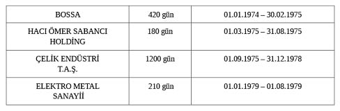

2010 yılında Cahit Kayra “38 kuşağı” dediği “Cumhuriyet’le Yetişenler” kuşağının bazı önde gelen temsilcilerini anlatırken şöyle yazar: “1950’den sonra Menderes, Demirel ve Özal gibi başbakanlık yapan liderlerin ileriye dönük iddiaları vardı. Bunlara daha sonraları vizyon adını verdik. Hiçbiri başarı değildi ve hepsinde değerli zaman yitirdik. Batı’nın giderek gerisinde kaldık. Erbakan bir geriye doğru atılımın ve acıklı talihsizliklerin lideriydi. Bülent Ecevit’in iddiası da bulanık ve düşseldi.”106
Değerli Hocam İlber Ortaylı’nın benim de katıldığım nitelemesiyle “berrak hafızalı, bilgili, titiz yazan”107 ünlü maliye bürokratımız Cahit Kayra, bu noktada sözü İsmet İnönü’ye ve onun çok partili siyasete geçiş kararına getirmektedir:
“İnönü’yü sağduyulu, stratejilerinde ihtiyatlı ve önlemci, bir anlamda statükocu diye tanımlayabiliyorum. Bu tanımlama içinde ileriyi düşünme ve görme ne kadar yer alıyor? [...] Savaşların içinde yoğrulmuş İnönü, Türkiye’nin İkinci Dünya Savaşı’na girmesi halinde bundan zararlı çıkacağını, çok büyük kayıplar vereceğini, gerçekçi ve ileriye dönük görüşleriyle değerlendirmiş ve stratejisini Türkiye’nin savaşa girmemesi üzerine kurmuştur. Bu strateji ile Türkiye’ye çok şey kazandırmıştır. [...]İnönü 1945’te Türkiye’de serbest seçime dayalı demokratik bir yönetime gidilmesi kararını vermiş ve yöresindekilerin karşı çıkmasına rağmen, bu kararı uygulamıştır. Bu ileriye dönük bir stratejidir. Böyle bir kararı verirken İnönü gibi bir devlet adamı, serbest seçimli demokratik sistemin Türkiye’yi, sözgelişi yirmi yıl sonra çok daha varlıklı, huzurlu, itibarlı bir ülke haline getirip getirmeyeceğini düşünüp tartışmış olmalıdır. O günlerin ortamı, koşulları ve değerleri açısından Batı standartlarıyla bir politik düzen kurmanın olanaklı olduğunu düşünmüşse, bugünkü durum bunu doğrulamamaktadır. Demokratik sistem kimi değerlerin bileşiğidir. İnönü bu kararı alırken Türk toplumunun o tarihteki yetişmişlik düzeni, kurumları, bilim ve iletişim olanakları bakımından tartışmasını yapmış mıdır? 1945’te bu karar alınırken, sözgelişi 1965’te bu olanakların hangi düzeylere çıkabileceğini hesaplamış mıdır? Aldığı karardan elli yıl sonra, yaşadığımız yirmi birinci yüzyılda Türkiye’de kadınların okuma yazma bilemeyecek durumda olabileceklerini hesaplarına katabilmiş midir? Toplumumuzun din ve inanç konularında o tarihlerdeki yapısını ve bu yapının serbest bir rejim içinde alacağı niteliğe ileriye dönük girişiminde yer ayırmış mıdır? Köy Enstitüleri kapatılıp yerine imam hatip okullarının temelleri atılırken bunun ileride doğurabileceği sorunları düşünmüş müdür? İleriye dönük planlar yapılırken bu planları uygulayacak kuşakların daha belli bir süre güçlenmesini, artmasını sağlamaya gerek olup olmadığını tartışmış mıdır?”108
Yeri gelmişken bu konuda kendi düşüncelerimi de ifade etmek isterim: İsmet İnönü, Atatürk’ün gerçekleştirmekte başarılı olamadığı demokrasi hayalini tamamlayan devlet adamıdır. 1950 seçim yenilgisiyse, hayatının en büyük zaferidir! Bu aynı zamanda cumhuriyetimizin de en büyük zaferidir! Menderes, Demirel, Özal, Erbakan ve Ecevit hep o büyük zaferin eseridir! Elbette çok partili dönemde siyasi hayata yönelik askeri müdahaleler ve Bonapartist anayasal yapının demokratik siyasal hayatın işletilmesine büyük zarar verdiğini bilmek zorundayız. Bununla birlikte çok partili siyaset olmasa idi bugün bu siyaset ve devlet adamlarının hiçbirisi olamazdı... Burada 27 Mayıs 1960 askeri darbesinin tartışmasına girecek değilim. O konudaki düşüncemi yıllar önce ifade etmiştim; tekrar ediyorum: 27 Mayıs 1960 askeri darbesinin Atatürk geleneği ile ilgisi yoktur; maalesef bu (kendisine hep rahmet dilerim, o da bu memleketin bir çocuğudur çünkü) Enver Paşa’nın, yani İttihatçıların mirasıdır. Yöntem, program ve hedefleri itibarıyla da 1960’ın 27 Mayısçıları, 1908’in 10 Temmuzcuları ile bazı benzerlikler içindedir. Özgürlükçü bir yan taşımaları, onların öncekilerle müşterek büyük günahları olan rejimi devirerek kendilerini iktidar ilan etmelerinin meşru sebebi diye gösterilemez. Kaldı ki, iki eylem farklı zaman ve mekânlardadır ve böyle bir benzetmenin de anlamı olmaz. Atatürk’ün siyaset ve yönetim felsefesinde meşruiyet (anayasa) dışı davranışlar kesinlikle makbul değildir.
Şimdi 1960’lı yıllara, Ankara’da Devlet Planlama Teşkilatı’na dönelim. Adalet Partisi çoğunluğuna dayalı hükümetin atadığı yeni müsteşar görevine henüz başlamıştır. Kendisi, bu ilk en önemli devlet görevinin ilk günlerinde izlediği yolu 22 yıl sonra Anavatan Partisi grubunda milletvekillerine şöyle anlatmıştır:
“Planlamayı hatırlıyorum. İlk müsteşar olduğum zaman, Başbakan Demirel bana aynen şöyle bir söz söyledi: Dedi ki, ben Planlama’ya girersem, herkesi temizleyeceğim, tabiri şudur: Elin demir, üzerinde bir eldiven olsun, içi demir olsun, fırsat bulduğun zaman vur. Bu onun karakterini gösteriyor. Hâlbuki biz kimseyi Planlama’da görevden atmadık. Açık ifade ederim. Birkaç kişi vardı, biraz fazla aşırıydı, onlar kendiliklerinden ayrıldılar. Yaptığım iş de genellikle, arkadaşları, milliyetçi bildiğim, o sırada kabiliyetli gördüğüm çocukları, büyük çapta Planlama’ya aldık, yetiştirdik, yurtdışına gönderdik ve Türkiye’nin önemli kadroları Devlet Planlama Teşkilatı’ndan çıktı. Hatta üç parti de bundan istifade etti. Solda vardı, ortada olan vardı, sağda olan vardı. Netice itibarıyla ahenkli bir çalışma kimseyi de atmadan, incitmeden yapıldı.”109
İşte Özal’ın bu özelliği, onun herkesi tartışmanın parçası kılmak anlayışından kaynaklanmaktadır. Zira Özal, fıtrat (yaratılış) olarak kimseyi yok saymaz! Turgut Bey’in anlatımında öne çıkan bir diğer hakikat de, o yılların planlama teşkilâtının bir siyaset okulu olup bütün partilerin kadrolarının orada titiz bir eğitimden geçmeleridir. İşte 1960’ların ve hatta 1970’lerin planlama gerçeği budur! Müsteşar Turgut Özal ise, farklı düşüncelerde insanların tartışmanın parçası olarak kalmalarına zemin hazırlayan bir ortamı sürdürme yolunu tercih etmiştir. İşte liderlik için önemli bir öğüt.
Yeni müsteşar ve üç silahı
Turgut Özal, 1 Şubat 1967-1 Mart 1971 tarihleri arasında dört yıldan fazla yürüttüğü birinci müsteşarlık döneminde, DPT’de stratejik öneme sahip üç alanda başarılı olmuştur.
Bunların ilki, mevcut yöneticilerin işine son vermeden kendi ekibini oluşturmasıdır. Oluşturduğu (belirlediği) kadroların 1970’lerde, 1980’lerde ve 1990’larda Türkiye bürokrasisinde en kritik pozisyonlara yükseldiklerini görüyoruz. Bu da Özal’ın bir lider olarak “kişi seçme” konusunda usta olduğunu kanıtlamaktadır. İkincisi, DPT’nin ana hedefini ve fonksiyonunu doğru okumasıdır. Bu ne demektir? Albert Einstein’a atfedilen bir söz vardır. Ünlü fizikçi “Delilik aynı şeyi tekrar tekrar yapmak ve farklı sonuçlar beklemektir” diyor. Özal, ilk planlamacıların yaptığını yapmamıştır, çünkü delilik olacaktır bu; onların tam tersine planlama fonksiyonunun kendi ayakları üzerinde durmasını sağlayıp bu kurumun bütün imkânlarını özel sektörün gelişimi için kullanmıştır. Sanayici Sakıp Sabancı’nın tanıklığını bu noktada hatırlatmak isterim: “Turgut Özal Bey, Planlama Müsteşarı oldu. O zamana kadar yarabbi, ne formaliteler, inim inim inleyen insanlar, sanayiciler vardı; onlardan biri benim. [...]Turgut Özal Planlama’ya gelince sanki bir rüya gördük, bir rüya gerçekleşti [...] Çünkü inim inim inliyorduk.”110 Yine Sakıp Sabancı anlatıyor: “Planlama Müsteşarı ilk Adana’ya geldiğinde ben Sanayi Odası başkanıydım. Bir panelde hepimizi şaşırttı. Kim ne yapmak istiyorsa on misli daha büyüğünü istiyordu. Biz diyoruz ki öz kaynağımız yok, biz buna da yetişemeyiz, projelerimiz bu. On misli daha büyük, her konuda ilerici adımlar atardı.”111
1998 yılında Ergun Sav, Cumhuriyet Bebeleri adlı kitabında Özal’ı işaret ederek bu tür bir tercihi eleştirirken şöyle yazmıştır: “Biz ‘devletçilik’ ilkesiyle büyüdük. ‘Zenginleri seven’, vizyon ve de televizyon sahibi, uyanık, kulağı kesiklerden olamadık.”112
Oysa Turgut Bey, DPT Müsteşarlığı’na atandıktan sonra özel sektörü geliştirmeyi kendisine stratejik bir hedef olarak kabul etmiştir. Sanayici Sakıp Sabancı’nın anlatımını Özal’ın yakın mesai arkadaşlarından Ekrem Pakdemirli de doğrulamaktadır:
“Turgut Bey, DPT’yi özel sektöre yönlendirici olarak kullandı. Teşvik Uygulama Daire Başkanlığı, Başbakanlık’a bağlı olarak kurulmasından hemen sonra Devlet Planlama Teşkilatı’na bağlandı. Özel sektör teşvikleri çok önemliydi. Ford, TOFAŞ, Renault fabrikalarının kurulma kararları alındı. Teşvikler verilerek, dayanıklı tüketim malları imalatı öne çıkarıldı. Çeşitli sektörler (turizm dahil) araştırılarak teşvikte öncelik verilecek alanlar belirlendi. Sol düşünce bu gelişmelerden bir hayli rahatsız olmuştu. Özel sektörü, Özal sektör diye adlandırıyor, Turgut Bey için takunyalı müsteşar diyorlardı.”113
Yıldırım Aktürk de onun bu çabasının yakın tanıklarındandır:
“Turgut Bey, özel sektörü geliştirme hevesiyle kurduğu Teşvik Dairesi’ne, bir nevi kendisinin bebeği gibi bakıyor. Amerikan Sefareti’nin karşısında şimdiki Sanayi Odası binasında oturuluyordu. Merkezden, haftada bir veya iki defa gelirdi. Bugün ne proje geldi çocuklar diye, sanki dükkânına iş gelmiş gibi, iş sahibi gibi, heyecanla projeleri alır, karıştırır, bizi yönlendirir, böyle kalın kalın projeleri beş dakika içinde ana noktalarından, şurasına intikal edin diye işaretler, giderdi.”114
Özal’ın bu dönemde başarılı olduğu üçüncü alan, belki ilginç gelebilir ama “konuşmak” ve “ikna etmek” şeklinde tanımlanabilir. Özal Planlama Müsteşarı olarak dış temaslarda da bu yeteneğinin büyük faydasını görmüştür. Dönemin bürokrasisinin saygın isimlerinden Kemal Cantürk, Özal’ın bu yeteneğine önemli bir uluslararası temas sırasında tanıklık etmiştir:
“Özal 1965 sonunda Devlet Planlama Teşkilatı Müsteşarlığı’na getirildiği 31 Ocak 1967’ye kadar zamanın başbakanı Süleyman Demirel’in planla ilgili konularda müşaviri gibi bir görev yürütüyordu. Onun, Devlet Planlama Teşkilatı Müsteşarı oluşu bu müşavirlik hizmetindeki üstün başarısından dolayı idi. O tarihten 1971 Nisan’ına kadarki müsteşarlık döneminde zamanın Merkez Bankası eski başkanlarından Naim Talu, Gelirler Genel Müdürü Adnan Başer Kafaoğlu, Sanayi Dairesi Başkanı Orhan Sorguç ve Hazine Genel Sekreteri olarak biz [Kemal Cantürk] onunla birlikte, Başbakan Demirel’in emrinde bir ekonomi kurmay heyeti halinde çalışmıştık. Özal’ın bu faaliyet dönemimizde zamanın Dünya Bankası Başkanı Robert McNamara’yla yaptığı tartışma gözlerimizi yaşartmıştı. O yıl Eylül sonunda IMF ve Dünya Bankası toplantıları dolayısıyla gittiğimiz Washington’daki mutat programda yer alan Dünya Bankası Başkanı’nı ziyarette en önemli konu Ereğli Demir-Çelik Fabrikası’nın ilk bölümünün finansmanının sağlanmasıydı. Görüşmede McNamara, tevsii için gereksiz diyor ve kredi talebimize karşı çıkıyordu. Rahmetli eski Maliye Bakanı Cihat Bilgehan’ın da bu görüşmede oldukça üzüntü duyduğu belli oluyordu. Fakat, Özal konuyu öyle güzel anlattı ve talebimizin haklılığını öyle izah etti ki, sonunda McNamara ‘tamam’ dedi ve (kendisi) eski bir demir-çelik fabrikası yöneticisi olmasına rağmen Özal’ın dediğini kabul etti.”115
Kemal Cantürk şöyle devam ediyor:
“Özal rakamları severdi. Fakat rakamların yazılı bulunduğu kâğıtları taşıyan ‘hukuk çantasından’ hoşlanmazdı. ‘Çiğ yemedim ki karnım ağrısın’ der ve işini bir an önce bitirmek için vakit kaybettirici gibi gördüğü hukuk kurallarına uymak onu sıkardı. Kendisini hep ikaz ederdik. Bilhassa 933 Sayılı Teşvik Kanunu çıktıktan sonra kurallara özellikle riayetini telkin ederdik. Bizim kökenimiz maliye müfettişliği, onunki ise mühendislik olduğu için bu konuda anlaşamazdık. Ama sonunda o da, biz de haklı çıktık.12 Mart 1971’den sonra Dünya Bankası’na ‘beynelmilel memur’ olarak gitti. Ama ardından yapılan teftişlerde gayet tabiidir ki ‘olmayan çiğ’e rastlanmadı.”116
Kabul edelim ki, dönemin içerden tanıklarından Günal Kansu’nun da yazdığı gibi, Turgut Özal’ın Planlama Müsteşarlığı’na atanması, “Bir dönemin bitip yepyeni bir çağın başlamasına” yol açmıştır.117 Günal Kansu, DPT açısından Turgut Özal’ın müsteşarlık dönemini şu şekilde anlatmıştır: “Turgut Özal’dan evvel, Planlama’da ortak bir kültür, ortak bir değer yargıları sistemi, ortak bir kalkınma anlayışı, ekonomi politikası tercihi vardı. Hiçbir değer veya başarı, bir, hatta birkaç kişiye mal edilemezdi. Özal’dan önceki müsteşarlar, bu genel atmosfere, ortak kültüre hem uydular, hem katkı yaptılar. Onlar da ‘plancılardan’ oldular; onlarla özdeşleştiler. Planlama’nın başarılarının, o yıllarda Türkiye’de bir Planlama ‘fırtınası’ esmesinin sırrı da buradaydı. Özal’ın birinci müsteşarlığı zamanında ise, DPT, Özal’ın DPT’si oldu.”118
Günal Kansu bu değerlendirmesini şu sözlerle tamamlıyor: “İtiraf etmek gerekir ki, olaya salt kurumsal açıdan bakınca, Özal damgası DPT’yi uzunca bir süre ‘başarılı’ da kıldı. Teşkilat onun zamanında tarihinin en prestijli yıllarını yaşamasa da, Türkiye’nin en güçlü ve etkili kuruluşu olmaya devam etti. Başbakanlık mevkiinde, kendisine ‘Ağabey’ diye hitap ettiği bir kişi vardı. Sırtını iktidarın başına dayayan bir DPT Müsteşarı da, hele Özal gibi bir kişiliğe sahipse, güçlü olurdu.”119
Özal’ın adamları
Özal’ın iki önemli silahından bir diğeri, hiç kuşkusuz kendi ekibini kurma becerisi ve isabetli kişi seçebilme başarısıdır. Özal, mevcut yapıya pek dokunmayıp kendisi yeni birimler kuruyordu. Kurduğu birimlerin başına da kendine sadakatle bağlı ve yeteneğinden, bilgisinden, birikiminden, kişiliğinden emin olduğu adamları tayin ediyordu! Güngör Uras’ın saptaması da aynı yöndedir: “Turgut Özal, Teşvik ve Uygulama Dairesi ile Araştırma-Geliştirme Dairesi gibi Planlama’nın kuruluş amacı dışında oluşturduğu kadroları DPT kadroları ile bir arada çalıştırmadı. O kadrolar için iki bina kiraladı. Araştırma-Geliştirme Dairesi’nin başına da kardeşini koydu.”120 Özal, profesyonel yönetici olarak bu ilginç formülü 1980’lerde ve sonrasındaki iktidar yıllarında elbette güç tek başına kendisinde ise daha rahat ve etkili olarak uygulamıştır.
Güngör Uras’ın 1960’ların DPT’sinde Özal’ın “adam seçmek” ve “çalıştırmak” başarısına işaret etmesi de bundandır: “Turgut Özal’ın ilginç bir yönetiş şekli vardı. DPT’nin çekirdek kadrolarına dokunmadı. Aynen korudu. Bu kadro ile Planlama’nın esas işlevlerini yürüttü. Fakat bunun yanında özel birimler kurdu. O özel birimlere kendi seçtiği kişileri görevlendiriyordu. Örneğin özel sektörün teşviki için oluşturulan dairede Yılmaz Ergenekon, Muammer Dolmacı, Ekrem Pakdemirli ile çalışıyordu. Ayrıca bir araştırma birimi kurdu. Başına kardeşi Yusuf Bozkurt Özal’ı getirdi. Daha sonraları Teşvik ve Uygulama Dairesi büyüdü. Maliye’den ve diğer bakanlıklardan çok sayıda eleman alındı. Tekrarda yarar var: Plan-program yapan kadroyu korudu. Plan-program yapan kadroya Turgut Özal’ın eklediği iki isim Nevzat Yalçıntaş ile Ekrem Ceyhun’dur. Ekrem Ceyhun, köy işleri deneyimi olan, ‘Garcia’ya mektup götürme’ yeteneğine sahip bir mühendisti. Kendisine verilen görevi ne yapar eder, engel dinlemeden yerine getirir, mektubu, hikâyedeki gibi Garcia’ya ulaştırırdı. Nevzat Yalçıntaş, derin tarih ve din kültürü ile kısa sürede Ankara’da sevilen bir kişi oldu.”121
2013 yılında basılan Hatıralarım adlı eserinde Nevzat Yalçıntaş kendisinin Özal tarafından göreve atanmasını şöyle değerlendirmiştir: “Turgut ağabeyin DPT Müsteşarı olması demek, içinde benim de olduğum yeni bir ekibin kurulması demekti.”122
1950’li yıllar boyunca Van’da Karayolları Bölge Müdürü olarak meslek hayatına başlayan İTÜ’lü Ekrem Ceyhun’un hatıralarında ise Özal’ın tarzını ortaya koyan biraz ayrıntılı bir anlatım vardır: “Eylül 1967’de YSE Genel Müdürü olarak DPT Müsteşarı Sayın Turgut Özal’ı ziyaret ettim. Ziyaretimin sebebi 1967 yılı programına konmuş bulunan köy elektrifikasyonu parasının arttırılmasıydı. Kendisiyle bir saate yakın sohbet ettik. [...] Bir saatin sonunda bana, ‘Ekrem, seni buraya alalım’ dedi. ‘Ne olarak geleceğim’ dedim. ‘Koordinasyon Dairesi Başkanı olacaksın’ dedi. ‘Başbakan Sayın Demirel’in bundan haberi var mı’ dedim. ‘Evet var’ dedi.”123
DPT Müsteşarı Özal’ın yakın çalışma ekibinde Ekrem Ceyhun (Koordinasyon Dairesi Başkanı), Yılmaz Ergenekon (Teşvik Uygulama Dairesi Başkanı) ve aynı dairede Muammer Dolmacı (Şube Müdürü) ve Ahmet Remzi Hatip ve Ekrem Pakdemirli (bu sonuncu isim müsteşar danışmanıdır ve RCD işleriyle) görevlendirilmiştir.124
Özal’ın Planlama’ya etkisi konusunda ilk Plancılardan Günal Kansu’nun da kabul ettiği en temel icraatı şudur: “Özal ve ekibinin ilk icraatları ve Planlama’ya getirdikleri ilk yenilik, devlet bütçesinden aktarılacak paralarla oluşan bir ‘Kalkınma Fonu’ kurmak oldu. Bu konuda İkinci Plan’a da kısa ve masum bir paragraf konularak, ‘Ekonomik gelişme ve özellikle sınaî gelişme ile ilgili araştırma ve geliştirme faaliyetlerinin etkin bir şekilde düzenlenmesi, en yeni teknolojik gelişmelerin izlenebilmesi için’ DPT bütçesi yatırım harcamaları bölümünde bir fon tahsis edileceği belirtildi. Tabii, Özal açısından esas amaç, özel firmaların gerçekleştirecekleri projelere düşük faizli kredi sağlayarak özel sektörü yönlendirmek ve geliştirmekti. Bu konuda, (Başbakan) Demirel’i ikna etmek güç olmadı, fon hemen birkaç ay içinde işler hale getirildi.”125
Günal, Özal’ın eski planlamacılar tarafından bir türlü benimsenemeyişini de şöyle yorumluyor: “İlk Plancıların Özal’a kanlarının bir türlü kaynamamasının iki temel nedeni vardı: ‘Dinciliği’ ve özel sektörcülüğü. Teşkilata yeni geldiği günlerdi. Kendinden öncekiler gibi, yeni müsteşar da belirli aralıklarla ‘genişletilmiş staff toplantıları’ yapılması geleneğini sürdürmek istiyordu. Bu toplantıların Ramazan ayına rastlayan ilkinde, gözler gene Özal’ın üzerindeydi. O kadarki, ilk Plancılar arasında ciddi iddiaya tutuşanlar bile olmuştu: Toplantı sırasında çay, kahve, sigara içilecek mi? Merakların tatmin olması, kazananlarla kaybedenlerin belli olması için çok vakit geçmesine gerek kalmadı. Zira toplantı başlayalı henüz 15 dakika olmuştu ki, Özal, yanındaki zile basarak içeri giren odacıya, ‘Sorun bakalım, kim çay, kim kahve içecek’ demiş ve plancıları, itiraf etmek gerekir, büyük bir hayal kırıklığına uğratmıştı. Plancılar, hayal kırıklığına uğramışlardı; çünkü bir yandan dillerine dolayacakları bir ‘sermayeden’ mahrum kalmışlardı, bir yandan da, hayallerinde yarattıkları, dillerine dolayacakları, ‘Takunyalı Özal’ imajı, çökmese bile zedelenmişti. Neyse ki aradan geçen aylar ve yıllar, Özal’ın hem ‘aşırı’ dinci izlenimi veren, hem de son derece ‘hoşgörülü’ olduğu imajını pekiştiren olaylarla doldu da, plancılar kendilerini tam bir düş kırıklığı içinde hissetmediler, birbirlerine anlatacak ‘Özal anıları’ kıtlığı veya sıkıntısı çekmediler.”126
Ayhan Katırcıkara’nın Devlet Planlama Teşkilatı Müsteşarı Turgut Özal’la ilgili önemli bir tanıklığı vardır: “Üniversite yıllarında Fatih’teki İskender Paşa Camii sık gittiğimiz bir yerdi. Talebeler kadar, bürokratlar, işadamları ve gençler de Mehmet Zahit Kotku Efendi’nin elini öpmeye, duasını almaya, vaazını dinlemeye gelirlerdi. Bu vesile ile onca aydınla da tanışma fırsatı olurdu. 1967 yılının bir cumasında o zaman dişçilik talebesi olan Erman Tuncer (sonra aynı fakültede profesör) ‘Gelin, sizi DPT Müsteşarı ile tanıştırayım’ dedi. Camiin içinde hemen bir halka oluştu. Turgut Özal’a herkes, ‘Hoş geldin’ diyordu. Avluda teker teker memleketimizi, nerede okuduğumuzu, burslu olup olmadığımızı, neler yaptığımızı, boş vakitlerimizi nasıl geçirdiğimizi sordu. O günlerde basın acımasızca Turgut Özal’a görüşlerinden dolayı, eylemlerinden dolayı saldırıyor, eleştiriyor. Bunlardan biri de DPT binasının altında mescit açtırmasıydı. Belirli saatlerde DPT binasından ‘takunya’ sesleri geliyormuş. Ve dindarlara, ibadetlerini ihmal etmeyenlere, inançlarını yerine getiren bürokratlara böyle bir isim takılarak dışlanmak isteniyordu, güç odaklarına ihbar edilmek isteniyordu. Ancak bu saldırılar, sataşmalar, inananların dayanışmasını arttırıyor, davasına olan sadakatini pekiştiriyordu. İlk defa bürokraside önemli bir atılım gerçekleşti o günlerde. DPT için açılan imtihanlarda artık değişik görüşteki gençler de başarı kazanmış, ilk sıralarda puanlar almış ve bir kapı aralamışlardı, sayıları o gün için az da olsa Hüsnü Doğan, Hasan Celal Güzel, Mehmet Dülger, Atilla Peynircioğlu ilk akla gelen uzman yardımcılarıydı DPT’ye girebilen.”127
Kuşkusuz bu yeni uzmanlarla öncekiler arasında bir uyumsuzluk baş göstermesi de kaçınılmazdı. Sonraki yıllarda milliyetçi-muhafazakâr camianın önemli isimlerinden olan Agâh Oktay Güner’in değerlendirmesi, sonrakilerin öncekileri ne şekilde algıladıklarını gösterir: “Bize çok yabancı idiler. Garip bir üstünlük duygusu ve kültür farklılığından doğan yabancılık içindeydiler. Çoğunluğu sol ekonomi görüşüne sahip bu arkadaşların, zamanla aştığımız kutuplaşmaları yanında idari hizmet kadrolarının sabotaj denilmeye layık tavırları bizi adeta bunaltıyordu.”128
Özal’ın farkı
Faruk Mercan’ın yazdığına göre 1966 kışında Necip Fazıl Kısakürek’in Ankara’da verdiği “Mehmetçik” konferansına Fethullah Gülen’le birlikte Turgut Özal da katılmıştır. Necip Fazıl Kısakürek, Ankara’da Büyük Doğu Fikir Kulübü’nde sohbetlere geliyordu. Özal, ünlü şairin bu sohbetlerinden kendisinin de haberdar edilmesi için arkadaşlarına tembihte bulunmuştur.129
Burada “Özal Farkı” başlığı altında Özal’ı anlamak için vurgulamak istediğim bir konu daha var: 1967 Türkiyesi’nde hemen bu noktada Turgut Özal’ın okumuş bir dindar olarak Planlama Müsteşarlığı’na atanmasının bu kurumda ne tür bir algıya yol açtığını da bilmemiz gerekir. Zira, sonradan o ve ekibi hakkında ortaya atılan “takunyalı” tanımlamasının gerçekte tartışmanın parçası kalmak isteyen bu kadroları tartışmanın dışında tutmakla eş anlamlı olduğunu, görünüşte laiklik hassasiyetinin tümüyle bir tür savaş hilesi olarak kullanıldığını ve anayasanın eşit yurttaşlık tanımıyla hiçbir ilgisinin bulunmadığını açıklayabilmemiz için buna ihtiyaç vardır. Dönemin önemli tanıklarından Günal Kansu’nun ilginç bulduğum bir anlatımında bu konuda bazı açıklayıcı sahneler aktarılmaktadır: “Özal, Planlama’ya gelir gelmez, müsteşarlık makamına bir seccade getirtti. Günün belirli saatlerinde odası herkese kapanır oldu. İlk kuruluş yıllarından beri sekreterliklerini yaptığı müsteşarlarına büyük bir sadakatle bağlı olan Yegâne Özkan’ın yüzündeki inanmazlık ve mahcubiyet ifadesi, ‘Beyefendi namaz kılıyor; sizi şimdi kabul edemez’ demek zorunda kaldıkça artıyor gibiydi. Özal’ı odasının bulunduğu kattaki tuvalette, herkesin içinde en doğal bir şey yaparcasına, paçaları sıyrılmış, bacakları ortada, çıplak ayakları lavabonun içinde, ‘abdest’ alırken gören plancılar, gözlerine inanamadılar. Fakat bir süre sonra bu sona erdi. Fakat bu sefer de meraklı plancılar, ‘Peki namazı kaçırmadığına göre, bu abdest işini nasıl hallediyor’ diye sormaktan, dedikodularına bir de ‘takıyye’ boyutu eklemekten geri kalmadılar. Ve tabii Özal’a bir ad takmakta gecikmediler: ‘Takunyalı.’ ”130
Günal Kansu içtenlik ve sevecenlikle ve dürüst bir tanık olarak şunları da aktarıyor:
“Özal’ın Planlama’ya getirdiği bütün bunlar bugün fazla yadırganmayabilir. ‘Ne var bunda’ denilebilir. Ancak, 1969’larda bu görülmüş, duyulmuş şey değildi. Nitekim DPT’nin yeni müsteşarının bunları niçin yaptığı konusunda teoriler de ortaya atıldı. Kimisi, ‘Canım, bir art niyet yok; adam dindar; yaşam tarzı bu’ derken, kimileri de, Özal’ın bu davranışının 40 yıllık Cumhuriyet geleneğine bir meydan okuyuş olduğunu ileri sürdüler. ‘Masumiyet’ teorisine inanan ilk grup, dini açıdan kişisel ve kamusal alan arasında fark olduğunu algılayamadığını; bu davranışlarının karakterine egemen olan şekilcilikten uzak, laçkalığa varan rahatlığın sonucu olduğunu ileri sürüyorlardı. ‘Komplocu’ ikinci gruba göreyse, Özal, laikliğin doğal bir sonucu olan kamusal alanda dini ‘ritüellere’ yer olmadığı ilkesine meydan okuyordu.
Fakat şunu da itiraf etmek gerekiyor. Zamanla dini inançlarını kendi içinde saklamayı daha iyi becermeye, bunu çevresindekiler üzerinde bir baskı unsuru olarak kullanmamaya özen göstermeye başladı. Dinine bütün bağlılığına rağmen, etrafındakilerden ve yanında çalışanlardan aynı şekilde davranmalarını beklemediği, bu konuda hoşgörülü olduğu kendisini yakından tanıyanlar tarafından sıkça dile getirilmiştir.”131
Güngör Uras’ın güzel, parlak ve özenli bir üslupla aktardığı gözlemler ve yine onun adlandırmasıyla “planlama iftarları” bu karşılıklı saygı ortamı ve ikliminin en çarpıcı örnekleridir: “Müsteşar odasının yanında iki gözlü bir tuvalet vardı. Bu iki gözlü tuvalete müsteşar da girer, bizler de girerdik. Müsteşarın odasından girilen özel bir tuvaleti yoktu. O tuvaletlerin ikisi de alafrangaydı da sonra biri alaturka mı oldu, hatırlayamıyorum, ama biri alafrangaydı, biri alaturkaydı. Ben Turgut Bey’in odasında takunya görmedim. Evlerdeki alaturka tuvaletlerde takunya olurdu ama Planlama’daki tuvalette takunya görmedim. Sonradan çıktı bu takunya lafları. Benim çok iyi bildiğim iki şey var: Turgut Bey namaz kılardı ama hiç kimsenin yanında namaz kıldığını görmedim. İzin isterdi, ‘Bir dakika’ derdi. Söylemezdi namaz kılacağını, odasının yanında bir oda daha vardı. Oraya girer namaz kılardı. Herkes bilirdi ki o namaz kılmaya gitti; biraz sonra gelirdi. ‘Ben namaz kıldım, namaz kılmaya gidiyorum’ diye tezahürat yaptığını görmedim. Daire Başkanları Nevzat Yalçıntaş, Ekrem Ceyhun, namaz kılan insanlardı. Ama Planlama binasında onların tek başlarına veya toplu olarak namaz kıldıklarını gören olmadı. Ramazan’da akşam saatlerinde Turgut Bey’in odasına genç bakanlar gelir, orada sohbet edilirdi. Bu sohbetlerin bazılarına ben de katıldım. Odaya pide getirtilir, iftar öncesi biraz ekonomi, biraz politika konularında sohbet edilirdi. Top atıldığında oruçlular oruçlarını açar, bana, ‘Sen burada otur’ dedikten sonra yan odada namaza geçerlerdi. İçlerinde bir tek ben namaz kılmıyordum. Müsteşarlık odasında namaz kılabilirlerdi ama onlar yandaki odaya geçerek namazlarını kılıp gelmeyi tercih ederlerdi. [...] Bir başka örnek daha vereyim. Müsteşar olduktan sonra Turgut Özal’ın yurtiçi seyahatleri başladı, Adana’ya, İstanbul’a gidiliyor. Özel sektör kuruluşlarına yeni teşvik ve uygulama tedbirlerini anlatmak için ziyaretler yapılıyor. Ben de Turgut Özal’la beraber seyahat ediyorum. İstanbul’a yaptığımız ilk ziyarette nereden icap ettiyse Ülker’in fabrikasına gittik. Uzun bir masanın başında Sabri Ülker oturuyor, çevresinde de diğer yöneticiler. Ben ilk defa görüyorum Sabri Ülker’i, Turgut Bey’in de daha önceden tanıdığını zannetmiyorum. Demek ki Ramazan’mış. Bir ara ‘Efendim namaz vakti’ dediler. ‘Peki, gidelim’ dedi Turgut Bey. Onlar yandaki odaya geçerlerken, Turgut Özal, ‘Güngör oruçsuzdur, onun yemeğini getirin’ dedi. Onlar namaz kıldılar, geldiler. Benim yemeğim henüz gelmemişti. ‘Güngör’ün yemeği ne oldu?’ diye sordu. Bana yemek getirdiler. Onlar oruçlu olduğu halde, onların önünde ben yemek yedim. Turgut Bey’in böyle bağnaz olmayan bir kişiliği vardı. [...] O zamanlar devlet dairelerinde bürokratların namaz kılması olağan bir şey değildi. Bunu Turgut Bey başlattı. Tekrar edeyim, Turgut Bey de şov için namaz kılmadı hiçbir zaman, ‘Ben Cuma’ya gidiyorum’ demedi. Cuma’ya gittiğini de bilmiyorduk biz, çünkü Planlama’dayken Cuma’ya gitmezdi, onu da söyleyeyim.”132
Günal Kansu, Özal’ın farklı düşüncede olan mesai arkadaşlarıyla dostluklarının sürekliliği konusunda bilgi vermektedir: “Etrafındakiler, [...] Özal’da, Tanrı’nın çok az kuluna nasip ettiği ‘şeytan tüyü’ bulunduğunu itiraf etmek zorunda kalırlardı. Galiba da, aynı hamurdan yoğrulmadıklarını bilmesine rağmen, Enver Ergun ve Günal Kansu gibi bazı ilk plancılara özel bir düşkünlüğü vardı. Nitekim dışarıdan bakılınca bir araya gelmeleri güç görünen bu üçlü arasındaki garip ilişki, Özal yüzünden DPT’den istifa etmelerine rağmen, teşkilattan ayrılmalarından sonra da yıllarca devam etti. Özal, yıllar boyu, politikaya atılmadan evvel ve sonra, New York’a her gidişinde, Ergun ve Kansu’yu muhakkak aradı. Bir araya geldiklerinde, herkes gibi Türkiye’nin nasıl kurtulacağını, Planlama’yı, yurda dönüşlerini konuşurlardı. Başbakanlık dönemi dahil, Özal, eski ‘mesai arkadaşlarına’, ANAP’a katılmaları dışında, belki de kabul etmeyeceklerini bildiğinden, Türkiye’de en üst düzeyde görevler önerdi.”133
Günal Kansu’nun anlattığı, “İşte Özal bu!” dedirtebilecek bir Özal gerçeğidir! Özal’ın yakın mesai arkadaşı Ekrem Pakdemirli’nin söylediği de Günal Kansu’yu doğrulamaktadır:
“Turgut Bey’in bu dönemde gözlemlediğim en büyük vasfı hoşgörüsü, pragmatik düşünce tarzı ve karizması idi. Aşırı sol düşüncedeki teknisyenlere de iş verir, onları çalıştırırdı. Sağ görüşlü çalışma arkadaşları, özel toplantılarda buna karşı çıkarlar, o da herkesin yapacağı işi var, önemli olan müşterek çalışabilmek derdi. Bu düşünce yapısını siyasete de taşıdı. Dev-Genç’in üst düzey yöneticisi ile Erbakan Hoca’nın Konya’yı teslim ettiği kişiyi ve MHP’nin üst düzey yöneticilerini beraber çalıştırabilirdi.”134
1967 Ankara’sında bazı çevrelerce “takunyalı” olarak ötekileştirilmek istenen Müsteşar ve eşi Semra Hanım’ın yakın dostu Güngör Uras’ın bir diğer tanıklığı ise o yıllarda Özal çiftinin mesai arkadaşlarıyla ilişkileri ve sosyal hayatları konusunda da ipuçları vermektedir: “Planlama’da çalıştığım dönemde cumartesi akşamları Turgut Özal ve Semra Özal dahil, sekiz on kişilik bir grup olarak Büyük Ankara Oteli’nin alt katına giderdik. Orası çok hoş olurdu. Turgut Bey ve Semra Hanım’la hiçbir zaman alaturka müzik yapılan bir yere gitmedik. Grup olarak böyle yerlerde eğlenirdik. Turgut Bey Planlama’ya geldikten sonra hanımıyla beraber gruba katıldı. Ayrılıncaya kadar da bu hafta sonu eğlenceleri sürdü.”135
Eşi Semra Hanım da, bu dönemde Başbakan Süleyman Demirel’in eşi Nazmiye Hanım’la çeşitli sosyal faaliyetlere katıldıklarını vurgulamıştır: “[1966 yılıydı,] Nazmiye Hanım’la ben gündüz çeşitli yerlere giderdik. Toplantılara, çaylara, çocuk yuvasına, kreşe, çeşitli yerlere, alışverişe beraber giderdik. Yani hemen her gün beraber olurduk. Çok yakın dostluğumuz, arkadaşlığımız vardı. Amerikan Kültür Derneği’nde, Çocuk Sevenler Derneği’nde. O konularda çalışırdık, o konularda dolaşır konuşurduk.”136
İlk Plancılar ekibinden Hikmet Çetin ise kendini Müsteşar’ın memurlarıyla birlikte karın doyurma alışkanlığına ve herkesçe bilinen bir özelliğine dikkat çekmekten alıkoyamaz. Çetin, kendisiyle 2013’te Ankara Oran şehrindeki evinde yaptığım görüşmede şöyle konuşmuştur:
“Planlama’da çalışırken Uludağ kebapçısına, Rüyam lokantasına giderdik. Bizler bir veya bir buçuk porsiyon, Turgut Bey ise iki porsiyon söylerdi.”137 Özal’ın bu yemek iştahı ve bunu sürdürme becerisinin pek çok tanığı vardır ama bir tanesi diğerlerinden ayrılmaktadır. Üstelik Özal’ın arkadaşı, tıp doktoru Saffet Solak’ın bu tanıklığı, 20 yıl öncesinden, 1989 yılında dünyada meydana gelecek dramatik bir değişiklik hakkındadır. Bir dost meclisinde sessizce, fakat iddialı bir bakış açısıyla yapılan mütevazı bir siyasi analiz olarak kayıtlara geçmiştir: “Turgut Özal’ı 1968’lerde tanıdım. Devlet Planlama Teşkilatı Müsteşarı iken ziyaret ederdim. İlk gördüğüm zaman hekim gözüyle olacak, şişmanlığı dikkatimi çekmişti. Sonra oturup uzun uzun sohbetler sırasında o ilk nazarda gözü meşgul eden obezitesinin yanında çok enteresan fikirlerinin olduğunu fark ettim. [...] Bilindiği gibi o yıllarda toplumumuzda oldukça yaygın vaziyette bir solculuk modası vardı. Muayyen bir kesim nazarında komünizm ve bunu rejim olarak kabul eden, süper güçlerden biri olan Komünist Rusya pek abartılıyor ve birçok kimse tarafından bütün dünyanın Komünist olacağı iddia ediliyordu. Azılı idealistleri vardı. Yanımızdakilerden birisi, Komünizm ve Komünist Rusya’yı kastederek: ‘Bunu acaba kim yıkabilir, hangi güç ortadan kaldırabilir’ diye bir soru attı ortaya. Turgut Bey de: ‘Bunu yıkacak güç pek bulunmaz ama kendi kendine yıkılırsa, o zaman da kimse mâni olamaz’ demişti. Kendi kendine yıkılacağı kimsenin aklına gelmiyordu ama Turgut Bey devam etti: ‘Evet kendi kendine yıkılacaktır. Zira bu rejim her bakımdan insan yaratılışına aykırıdır. Mevcudiyeti şiddetli baskı ve zulümle devam ettiriyor. İnsan kendi elini yumruk yaparak sıkmaya başlarsa bunu devam ettiremez, bir an gelir yorulur ve açmak zorunda kalır’ diye bir gün yıkılabileceği ihtimalinin izahını yapmıştı. Nitekim öyle oldu.”138
İşte bu da Özal’ın realist yanıdır. Yalnız onun realistliği diplomatlarınkinden farklı olarak bir mühendis realistliğidir. Özal’ın farklı dünyaların insanlarıyla kurduğu ilişkiler onun kişilik yapısının, kapsayıcı ve kucaklayıcı liderliğinin kanıtlarıdır.
Güngör Uras’ın, Haşim Akman’ın Özal’ın planlama yıllarıyla ilgili olarak Özal’ın çalışma arkadaşları hakkında yönelttiği soruya verdiği karşılık şöyledir: “Turgut Özal, sağ görüşlüydü ve aynı görüşte güvendiği birtakım insanlar vardı. Onlara da körü körüne güvenmezdi. Kendi takımını tutardı. Ama buna mukabil, sağcıymış, solcuymuş, komünistmiş, hiç böyle şeylere bakmazdı. Çetin Tokcan isminde bir arkadaşımız vardı. Babası paşaydı. İstanbul Üniversitesi’nde asistanken Sosyal Planlama’daydı. Çetin Tokcan solcu bilinirdi ve o karmaşada değişik nedenlerle kendi ayrıldı. Turgut Özal, Teşvik ve Uygulama Dairesi kurulurken Maliye Bakanlığı’ndan bir genci getirdi. ‘Bunun ailesini annem Malatya’dan tanır. Çok namuslu ailedir. Onun için bu dairenin başına getirdim’ dedi. Bir süre sonra beni çağırdı. ‘Güngör, annemin komşusunun oğlu namuslu ama beceriksiz çıktı. Sen de Çetin Tokcan’ın arkadaşısın. Ara bakalım, gelir mi’ dedi. Ben şaşırdım, ‘Çetin Tokcan solcu. Solcu olduğu için ayrıldı. Siz onu tekrar işe alır mısınız’ diye sordum. ‘Solculuğu, sağcılığı işine bulaştırmadıkça beni ilgilendirmez. Ben iş yapan adam arıyorum’ cevabını verdi. Benimle ilişkisi de ilginçtir. Ben solcu tanınırdım. Beni de kendilerinden saymazdı. Ama beni hep yanında çalıştırdı.”139
Güngör Uras’ın 1960’ların planlama teşkilatında insan ilişkileri iklimine dair izlenimleri önemlidir:
“Aile gibiydik. İş dışında da iyi ilişkiler devam ederdi. [...] O zamanlar teşkilatta kimsenin kapısı kapalı değildi. Sekreter engeli diye bir şey yoktu. Planlama’ya iş takibine kimse gelmezdi. 30 uzmanız. Memduh Aytür, Maliye’den geldiği için odasından çıkmazdı, ağır toptu. Ama Turgut Özal odasından çıkar, kollarını sıvar gelir, benim masamın üstüne –sandalyeye değil masanın üzerine– oturur, odaya toplanan uzmanlarla vatan kurtarmak üzerine sohbetler ederdi. Gündüzleri vatan kurtarma çalışmalarıyla geçerdi. Herkes öğlenleri evine gider, yemeğini yer, öğleden sonra ciddi çalışma dönemi başlardı. Bizim esas çalışmamız 14.00’ten gece 01.30-02.00’ye kadar devam ederdi. Sabahları daha çok okuma, yazma, tartışma, ufak toplantılarla geçerdi.”140
“Müsteşar olarak Ziya Müezzinoğlu ve Memduh Aytür ciddi insanlardı. Müsteşar Bey’i gördüğün zaman önünü iliklersin. Onlar odalarından çıkmazlardı. Sonra Turgut Özal müsteşar oldu. Turgut Özal, ceketle gezmiyor ki, beyaz gömleğinin kolu hep sıyrılmış vaziyette. Göbeğinin altında bir pantolon. Eski alışkanlık, müsteşarı gördüğünüz zaman arzı hürmet eder, başınızla selam verirsiniz. Lütfeder elini uzatırsa, elini sıkarsınız. Turgut Özal geldi, biz ilk defa öpüşmeyi öğrendik. Onun meşhur bir harmanlama hareketi vardı. Koridorda gördü mü, sağ eliyle elinizi tutar, sol eliyle insanı sırtından yakalayarak kendine çeker, harmanlayıp langırt diye öperdi. Gel zaman git zaman, nerden çıktıysa bir gün baktım, ‘Müsteşar Bey’ unvanı ‘Turgut Abi’ oldu. Ben hiç ‘Turgut Abi’ diye hitap etmedim. Araştırdım, bir baktım, bu işi başlatan Hikmet Çetin’miş. Bütün bunlara rağmen hiçbir şekilde laubalilik olmazdı.”141
“Turgut Bey Planlama’ya geldiğinde, yakın çalışma imkânım oldu. Bazen evinde çalışırdık. Semra Hanım Planlama’yla ilgilenir, olan biteni yakından izlerdi. Evde biz Turgut Özal’la çalışırken, Semra Hanım bir köşeye ilişir, dikiş dikerdi. Ama arada dayanamaz, ‘Güngör, sen yine bir şeyler yapmışsın, anlat bakalım’ der, Turgut Bey çok bozulurdu. ‘Çalışıyoruz, sonra sorarsın’ derdi. Ama Semra Hanım çok severdi abartılmış aşk hikâyelerimi dinlemeyi.”142
Güngör Uras’ın Müsteşar Turgut Özal’la karşılıklı güven, saygı ve sevgi çerçevesi içinde sürdürdükleri dostluk, kendisinin bir ara ABD’ye görevli olarak gitmesi sırasında da sürmüştür:
“Washington’dayım. Ankara’dan telefonla DPT Müsteşarı Turgut Özal’ın Washington’a geleceğini bildirdiler. Geliş gününü ve nerede kalacağını bildirdikten sonra benimle görüşmek istediğini söylediler. [...] Turgut Özal’ın geleceği gün, kalacağı bildirilen Mayflower Oteli’ne telefon ettim. Turgut Özal, ‘Gel, seni bekliyoruz’ dedi. Otelde Turgut Özal’ın odasına girdiğimde ilginç bir görüntü ile karşılaştım. Turgut Özal pijamasını giymiş, yatağın üzerinde bağdaş kurmuş oturuyordu. Merkez Bankası Başkanı Naim Talu takım elbisesi içinde kravatlı, elinden hiçbir zaman düşürmediği Yeni Harman [sigarası] paketi ve yakmaya hazır ama uzun süre yakmadığı sigarasıyla ortalıkta dolaşıyordu. Maliye Bakanlığı Müsteşarı Kemal Cantürk ise köşedeki koltukta oturuyordu. Amir-memur mesafesi hemen her üçüyle de yakın ilişkim vardı. İş konuları dışında her konuda sohbet ederdik. IMF ile devalüasyon konusunu tartışmaya geldiklerini söylediler. Sonra da bana, ‘Anlat bakalım, Washington’da ne var ne yok? Sen ne yapıyorsun? Bizi nereye götüreceksin?’ diyerek takıldılar. Ben onlara ‘check-up’ maceramı anlattım.
Prostat kontrolü konusunda anlattıklarım, ilgilerini çekti. Turgut Özal, ‘Arkandan demir çubuk sokmalarına nasıl izin verdin?’ diye takılırken, Naim Talu işi ciddiye alarak check-up konusunda sorular sordu. Ben IMF ve Dünya Bankası ile temasa geldikleri için aynı sağlık programından yararlanıp check-up yaptırabileceklerini, bu konuda deneyimim olduğu için kendilerine yardımcı olabileceğimi söyledim.
Turgut Özal, ‘Naim Abi, hadi biz de yaptıralım’ dedi. (Turgut Özal özel sohbetlerde Naim Talu’ya, ‘Naim Abi’ diye hitap ederdi). Kemal Cantürk, ‘Arkadan demir sokuyorlarmış, ben arkamdan demir sokturmam’ diyerek itiraz etti. Naim Talu ortada kaldı. Sonuçta üçü de check-up fırsatını kaçırdı. Müzakereler tamamlandı. Türkiye’ye döndüler.”143
Elbette hayat güllük-gülistanlık gidecek demek değildir; bazen insanları ve kurumları üzen istenmeyen olaylar da yaşanabilir ve insanlar yollarına devam ederler.
Turgut Bey’in 1960’larda ilk müsteşarlık döneminde baş gösteren “Emin Çölaşan Krizi” de böyledir. 1980’lerde bir ara, kısa süreli ateşkes olmuşsa da hayatının en son evresine kadar sürmüştür; bu konuda Güngör Uras’ın tanıklığı ve değerlendirmesi Emin Çölaşan lehinedir ve adaletlidir:
“Emin Çölaşan uzman yardımcısı olarak Turgut Özal müsteşar ve Nevzat Yalçıntaş daire başkanı olmadan kısa bir süre önce Sosyal Planlama Dairesi’nde çalışmaya başlamıştı. Genç, yakışıklı, sevimli, esprili kişiliği ile çok sevilirdi. Kadrolu olmayanların mukaveleleri her yıl Mart’ta yenilenir, mukavelesi yenilenmeyenlerin DPT ile ilişkisi kalmazdı. Emin Çölaşan’ın mukavelesi yenilenmedi. Nedeni planlamadaki çalışmalarının yetersizliği değildi. ODTÜ’de öğrenciyken Hocası Turgut Özal’ı sinirlendirecek davranışları olmuştu. Emin Çölaşan çok üzüldü. Bizler de üzüldük. Emin Çölaşan Danıştay’a başvurdu. Danıştay kararına rağmen, Turgut Özal Planlama’ya almadı. Bu arada Emin Çölaşan dava sırasında bugünkü eşini tanıdı. Turgut Özal’ın Emin Çölaşan’a olan kızgınlığı DPT’den ayrılmasıyla sona ermedi. Emin Çölaşan’ın TPAO ve Maliye’de bulduğu işlerden de ayrılması için baskı yaptı.
Turgut Özal, banker krizinden sonra Ankara’dan ayrılmak zorunda kaldı. Side’ye yerleşti. Bir süre unutuldu. İşte o günlerde Emin Çölaşan, Hürriyet muhabiri olarak onu aradı. Söyleşileriyle tekrar gündeme getirdi. Turgut Özal Ankara’ya dönünce Emin Çölaşan’la arası düzeldi. Ne yazık ki bir Uzakdoğu gezisi dönüşünde Emin Çölaşan’ın gezi sırasında olup bitenleri anlatan röportajına kızan Turgut Özal bu defa bir daha konuşmamak üzere Emin Çölaşan’ı defterden sildi.”144
Emin Çölaşan olayı bir istisna olarak kabul edilebilir. Müsteşar Özal hakkında anlatılanlar bu yöndedir.
Özal sorunların çözümüne çalıştı
Peki Özal, Planlama Müsteşarı olarak çalıştığı 1967-71 yılları arasında Türkiye’nin hangi sorunlarına el atmış, ne gibi çözüm önerileri geliştirmişti? Müsteşar Özal’ın bu dönemde hizmetlerini iki başlık altında incelemek doğru olacaktır. Birincisi, yüksek bürokrat olarak kendisinin yüklendiği resmi işler, ikincisi de sivil (hayırseverlik) faaliyetleri, Özal’ın bu yönü bilinmeden bir dindar teknokrat olarak portresi eksik olur.
1960’lar Türkiyesi’nde Özal, sivil hayırseverlik faaliyetlerinin güç kazanmasında ciddi sorumluluk almış ve bu faaliyetlere aktif olarak hayatının her döneminde katkıda bulunmuştur.
Hulusi Çetinoğlu’nun aktardığına göre, Özal’ın bu tür sivil hayırseverlik faaliyetlerinin en çarpıcı örneği, Türkiye Milli Kültür Vakfı’dır. 1969 yılında İstanbul’da bir grup sanayici ve öğretim üyesi tarafından kuruluş hazırlıkları yapılan Türkiye Milli Kültür Vakfı’nın ilk mütevelli heyeti başkanı, aynı zamanda o sırada Türkiye Büyük Millet Meclisi Başkanı da olan Ferruh Bozbeyli’dir. Ankara’dan Turgut Özal ve Hulusi Çetinoğlu da kurucular arasına alınmıştır:
“İlk mütevelli heyeti başkanı Sayın Bozbeyli, DP’yi kurunca başkanlıktan ayrıldı. O sırada İstanbul’a, özel sektöre geldiğim için başkanlık bana verildi. O (Turgut Özal), Amerika’dan, Dünya Bankası’ndan dönünce, başkanlığı almasını, vekil olarak devam edebileceğimi belirttim. Bu başkanlığı 1975’ten, 1982’de ANAP kuruluncaya kadar devam etti.”145
Bürokrasi ve siyaset alanında başarılı görevleri öne geçtiği için, Özal’ın aktif sivil hayırseverlik faaliyetleri bilinmez. Kanımca bu yanı, onun kişiliğinin en önemli kısmıdır. Özal’ın benimsediği hayat anlayışına göre dindarlık faydalı olmak demektir. Dolayısıyla lisede yatılı okurken ve üniversitede öğrenim gördüğü yıllarda çektiği sıkıntıları unutmamış bir yüksek bürokrat olarak öğrencilerin ve gençlerin okumasına, yurt ve barınma sorunlarına yardımcı olmak, yoksul ve dar gelirli ailelerin çocuklarına burs ve yardımlar sağlamak amacıyla kendisiyle aynı görüşü paylaşan varlıklı şahsiyetlerle bir vakfın kurulmasına öncülük etmesi son derece doğaldır.
Hulusi Çetinoğlu şöyle devam ediyor: “Cemiyet ve millet hayatında, yetişmiş insan gücüne olan inancını, burada imkânları mahdut gençlerin yetiştirilmesinde, beraberce tatbik ettik ve burs sayısını her yıl arttırdık.”146
Özal, DPT müsteşarı olarak çalıştığı dönemde Türkiye ekonomisinin müzmin sorunlarına adeta el koymuştu. Kendisinin titizlikle kafa yorduğu sorunlar şunlardı:
Yabancı sermayenin teşviki: “Ankara’da Yabancı Sermaye Teşvik Dairesi’nde beraber çalıştığımız dönemde Turgut Özal’ın en büyük hayali Türkiye’de Philips’e fabrika kurdurup üretime geçirtmekti. Dünyanın en büyük şirketi Türkiye’de yatırım yapsın isterdi. Olmaz böyle şey ya, isterdi.”147
Ege ve Akdeniz’de turizm yatırımları: “Yıl 1967... İkinci Beş Yıllık Plan’ı tanıtma gezileri nedeniyle o günlerin DPT Müsteşarı Turgut Özal başkanlığında bir grup DPT uzmanı Türkiye’yi dolaşıyor. [...] İzmir’deyiz. Müsteşarımız Turgut Özal, ‘Tatil köyü, tatil köyü... Nedir şu tatil köyü? Hadi gidip görelim’ dedi. O yıla kadar bu tatil köylerine sadece yabancılar kabul ediliyor. Türkler sadece yurtdışından rezervasyon yaptırabiliyor. Koordinasyon Dairesi Başkanı Ekrem Ceyhun gerekli izni sağladı. Ağustos ayının sıcağında bizler üzerimizde koyu renk elbise ve kravat (o yıllarda Turgut Özal da böyle gezerdi) Kuşadası’nda Club Mediterranee’nin işlettiği ve yerli müşterinin henüz kabul edilmediği tatil köyünü ilk defa gezdik, gördük. Çıplaklar arasında siyah elbiseli kravatlı adamların dolaşması (Türkiye’de ilk defa üstsüzleri görüyorduk) bir olay olmuştu.”148
Toprak reformu sorunu: “Planlama’nın ilk yıllarında sanayileşme konularından çok tarım ve toprak reformu gibi konular öne çıkmıştır. (Attila) Karaosmanoğlu ve arkadaşlarının Planlama’dan ayrılmasına kadarki dönem, daha çok tarım reformuyla ilgili tartışmalarla geçmiştir. Onun dışında Türkiye’nin sanayileşmesi için farklı yaklaşımlar olmamıştır. Türkiye’de nasıl bir tarım ve toprak reformu yapılacağı tartışılmıştır. Karaosmanoğlu ekibi ayrıldıktan sonra bu konular unutulmuştur. Toprak reformu konusu da pek iyi anlaşılamamıştır. Dikkat buyrulursa toprak reformu, halktan gelen bir istek değil, entelektüellerin bir özlemi olarak ortaya çıkmıştır. ‘Türkiye’de fakir çiftçi, maraba toprak reformu için ayağa kalktı’ falan... Yok, böyle bir şey. Bizde tam tersine yarıcılar, çalışanlar hayatlarından memnun. Entelektüeller, ‘köylüye bir imkân yaratalım’ arayışında. Bu yapılırken Ankara’da her kesimde bir korku vardı. Ankara, Türkiye’nin doğusunda olanlardan korkuyordu. Doğu’da bir ağalık sistemi var. Bu ağalık sistemi bir, politikacıyı destekleme bakımından; iki, asayişi kontrol etme bakımından; üç, oradaki sosyal huzuru sağlama bakımından ve dört, ekonomi, yani açları doyurma bakımından, yerleşmiş bir düzeni temsil ediyor. Toprak reformu için öncelikle ağalık sistemini ortadan kaldırmalısınız. Ağalık sistemini kaldırırsanız yerine ne koyacaksınız? Toprak reformu konusunda iktidarları endişelendiren hep bu olmuştur. Toprak reformunu iktidarlar, tarımda üretimin artışı olarak görmediler. Toprak reformu olursa müesses nizam değişir korkusu gündeme geldi. Bu değişim nasıl bir sosyal ve asayiş sorunu yaratır korkusu, toprak reformunu önlemiştir.149
Araştırma-geliştirme projeleri: “Araştırma-Geliştirme Dairesi’ne, o zamanın şartlarında çok önemli işler, projeler yaptırdı Turgut Özal. Turgut Özal kendi inisiyatifi ile birtakım fonlar bularak, yabancılara çok önemli araştırmalar yaptırdı. Mesela turizm araştırmaları... Örneğin “Side Bölgesi Turizm Araştırması.” Side bölgesini bir cazibe merkezi haline getirmek ve bütün o mevcut yerleşim yerlerini yok ederek, Side’yi ortaya çıkarmak istiyordu. Ne yazık ki uygulanamadı. Side’de yıkılacak evlerden birini de Turgut Özal satın aldı. Sürgün döneminde orda kaldı. Sonra örneğin “Batı Anadolu Kıyı Şeridi Turizm Geliştirme Projesi” ya da “İstanbul-Zeytinburnu-Karaköy Geliştirme Projesi.” [...] Zeytinburnu’nda o zaman deri fabrikaları vardı. Onlar nasılsa oradan temizlenecek, orada ön bölüm tamamen rekreasyon alanı olarak, denize girme alanı olarak, aynı Rio’daki gibi yapılacak. O bölge Yeşilköy’e kadar turistik sahil şeridi olacak. Kıyılara hiçbir şekilde bina yapılmayacak. [...] Örneğin İstanbul’dan başlayarak Ege Denizi’nin batı kıyısından aşağıya doğru indirmek için bir proje hazırlandı. Çünkü o zamanki şartlarda İstanbul’a gelen turistleri aşağıya taşıyacak bir imkân yoktu. Diyorlardı ki, Ankara-İstanbul demiryolu önemli değil. Bu iki nokta arasında sadece memurlar gidip gelir. İstanbul’dan İzmir’e, İzmir’den Antalya’ya kadar demiryolu bağlandığında kıyı şeridinde, hızlı demiryoluyla turistler gidip gelir. Turizm ancak böyle gelişir. Bunlar gibi birtakım projeler vardı.
Turgut Özal’ın çok önemli bir başka projesi de, yaş meyve ve sebze ihracatının teşvikini esas almıştı. (Cem) Uzanların sonra batırdığı bütün o enerji yatırımları, Çukurova Bölgesi Geliştirme Projesi’nin bir parçasıdır. Narenciye ihracatını geliştirmek için Amerika’dan özel fidanlar getirildi, narenciyecilere dağıtıldı. Türkiye’de o zaman domates üretimi yoktu. Domates ve hıyar üretip satacaktık.
Turgut Özal’ın bir başka projesi de, ‘Doğu’yu Kalkındırma Azgelişmiş Bölgeleri Geliştirme Projesi’dir. Bunun için özel bir grup kurdu. O grup da araştırma-geliştirme grubuyla beraber ayrı bir binada faaliyet gösteriyordu. Altyapı tamamlandıktan sonra sanayi doğuya çekilecek ve doğu cazibe merkezi haline getirilecekti.
Özal, Türkiye’ye çağ atlatma arayışında ‘Yaş Meyve ve Sebze İhracat Projesi’ni geliştirdi. Projeyi Dünya Bankası’na kabul ettirdik. Yaş Meyve ve Sebze İhracat Projesi’nin aslı şu: Şarıl şurul akan derelerimizi, parıl parıl parlayan güneşimizi dövize çevireceğiz. Bunun için Batı ve Güney Anadolu’da kıyı şeritlerinde cam ve plastik seralar kurulacak. Tohum ithal edilecek. Bu seralarda hıyar ve domates yetiştireceğiz. Domatesler yusyuvarlak ve aynı boyda olacak. Hıyarlar değişik boyda, değişik kalınlıkta, dümdüz yemyeşil olacak. Frintaş diye bir nakliye şirketi kurulacak. Bu şirket soğuk hava donanımlı TIR’lar, soğuk hava donanımlı gemiler ve de THY’nin elindeki DC-4 uçaklarını satın alacak. Hıyarları harıl harıl Avrupa’ya taşıyacak. Avrupa şehirlerine her mevsim en temiz en taze hıyarları biz ihraç edeceğiz. Türkiye’ye döviz akacak.”150
Ekonominin tek merkezden yönetimi sorunu: Özal’ın birinci Planlama Müsteşarlığı döneminde Dışişleri Bakanlığı ile Planlama arasındaki ipleri geren ve 10 yıl sürecek olan kurumlar arası mücadele başlamıştır: Turgut Özal, İkinci Plan’da sözü edilen tedbirlere dayanarak, AET çalışmaları koordinasyonunun Dışişleri’nden alınarak DPT’ye verilmesi girişiminde bulunmuştur. Bu konuda hazırlattığı bir kararname taslağını Başbakan Süleyman Demirel’i ikna ederek, 24 Mart 1968’de Bakanlar Kurulu’nda imzaya açtırmıştır. Gerekçesi, “monşerler” olarak gördüğü, Batı’nın dümen suyuna gireceğine inandığı diplomatların, kalkınma kavramından pek haberli olmadıkları. Diplomatlarsa, bunu hem kendi yetki alanlarına yapılan bir saldırı olarak görmüşler, hem de “takunyalı” olarak bildikleri Özal ve ekibinin Avrupa ile entegrasyon gibi tarihsel ve politik boyutları son derece kompleks olan bir süreci kavrayamayacaklarından emindirler. Bu yüzden dünyaya kapalı bir kurum olarak gördükleri DPT’den Avrupa’yla bütünleşme yönünde bir karar çıkmayacağını düşünmektedirler. Kararnamedeki imzalar tamamlanmak üzere iken, Dışişleri Bakanı İhsan Sabri Çağlayangil, Tevfik Saraçoğlu’nun ısrarıyla, önce imzasını geri çekiyor ve sonra da bu işten vazgeçilmediği takdirde istifa edeceği tehdidinde bulunuyor. Uzun, şiddetli kavgalara yol açan bu girişim böylece Dışişleri’nin kararlı tutumu sonucu püskürtülüyor.151
Banka ve sermaye düzeni için yeni arayışlar: Güngör Uras, Haşim Akman’la yaptığı nehir söyleşisinde, Turgut Özal’ın 1967 yılında bir gün, “Banka sistemi için bir uzman getirsek, senin söylediğin bu şeyleri bir bütün olarak incelesek nasıl olur” dediğini ve daha sonra IMF’nin Robert Eisenberg isimli bir Çekoslovakya Yahudisi bankacılık uzmanını Türkiye’ye gönderdiğini anlatırken, bir bakıma müsteşarının gerçekçi ve bir o kadar da basit yöntemini de açıklamıştır:
“Turgut Özal’la İstanbul’a geldik. Turgut Özal bankaların genel müdürlerine, ‘Böyle böyle çalışma yapacağız, sizler de bunun içine katılacaksınız. Ben başkanım, hepiniz de bu komitenin üyesisiniz’ dedi. ‘Genel Politika Komitesi’ oluşturuldu. İktisadi Planlama Dairesi Başkanı Merih Celasun, Turgut Bey’in yardımcısı oldu, ben de projenin genel koordinatörlüğüne getirildim. Ayrıca Türkiye Sınaî Kalkınma Bankası Genel Müdürü Bülent Yazıcı’nın başkanlığında bir teknik çalışma grubu kuruldu. Sonra Turgut Özal, ‘Haydi atın bakalım ortaya bir para. Sonra da bu komitenin masrafları için bir fon oluşturun, onu da siz yönetin’ dedi. Bülent Yazıcı’ya, ‘Siz de bu paraları toplayın, masrafları bu fondan karşılarsınız’ dedi.
Eisenberg geldi, İstanbul’da bir ev tuttuk ona. Bütün masrafları Bülent Yazıcı o fondan ödedi. Bankalar kendi uzmanlarını ayırdılar. Teknik çalışma grubu için İstanbul’da bir büro tutuldu. Grubun çalışmalarına Oktay Yenal, Kenan Bulutoğlu, İbrahim Öngüt, Metin Tokpınar, Özhan Eroğuz, Âkil Kitapçı, Burhan Karagöz, Kemal Türkömer destek sağladılar. Ayrıca sermaye piyasası mevzuatıyla ilgili bir çalışma için Columbia Üniversitesi’nden Prof. Cary, Paris Üniversitesi’nden Prof. Houin, Cenevre Üniversitesi’nden Prof. Patry davet edildi. Türkiye’den Prof. Reha Poroy, Haluk Tandoğan, Yaşar Karayalçın, Özhan Eroğuz, Hulki Alisbah çalışmalara katıldı. Çalışmalar iki yıl sürdü. Çok sayıda kanun tasarısı, rapor hazırlandı. 1983-1985 yıllarında başbakanlığı sırasında Turgut Özal’ın uygulamaya koyduğu tedbirlerin çoğu da bu çalışmaların ürünüdür. Merkez Bankası ve Bankalar Kanunu konusunda iyileştirici politikalar belirlendi. Sermaye Piyasası Kanunu’nun temeli, borsa mevzuatı, yatırım fonları, yatırım ortaklıkları gibi yenilikler bu çalışmalarla oluşturuldu.
Teknik çalışma grubu, Eisenberg’in sorumluluğundaydı. Eisenberg bize başka ülkelerde olan bitenleri aktarıyordu.”152
Güngör Uras’ın şu aktardıkları ise Türkiye adına hayli düşündürücüdür:
“Bu çalışmalara 1967 yılının Ağustosu’nda başlamıştık, 1969 yılı Şubat ayında tamamlandı ve Robert Eisenberg ve eşi Türkiye’den ayrıldı. Aslında gitmek istemiyordu pek, çünkü çalışmaların sonucunu görmek istiyordu. 12 Mart 1971 askeri müdahalesinden sonra Turgut Özal’ın DPT’den ayrılması, Eisenberg raporlarının ele alınmasını geciktirdi. Eisenberg’in çalışmalarını o sırada kurulan ‘Reform Hükümeti’nde ekonomik reformlardan sorumlu Attila Karaosmanoğlu’na duyurduk. Karaosmanoğlu konuya ilgi gösterdi. Bunu duyunca Eisenberg kendi imkânlarıyla Türkiye’ye geldi, günlerce Ankara’da kaldı. 1971 yılının o civcivli günlerinde, ‘Reform Hükümeti’nin en saygın döneminde Karaosmanoğlu ile temas şansı bulamadan geri döndü. Fakat Türkiye’yi, özellikle para-banka-kredi konusundaki gelişmeleri devamlı olarak izledi.
1979 yılında Demirel Hükümeti döneminde Turgut Özal’ın sorumluluk almasına çok sevindi. Turgut Özal da Eisenberg’den öğrendiklerini unutmadı, uygulamaya koydu. Uygulamadaki iyilikleri duymak Eisenberg’in yaşlı günlerinde en büyük zevkiydi.”153
Zoraki ayrılık
Turgut Özal’ın uzun yıllar boyunca en yakın mesai arkadaşlarından olan Hasan Celal Güzel’in 12 Mart 1971 askeri müdahalesinden sonra DPT üst yönetiminin duruşu hakkında aktardığı ilginç bir tanıklık vardır: “Turgut Bey, her zaman yaptığı gibi kendi sorumluluğunu bilen bir bürokrat olarak 12 Martçı ekibe yani 11’ler Hükümeti’ne çok güzel, kalın bir ekonomi raporu hazırladı. Hepimizi görevlendirdi. Hepimiz gece gündüz çalıştık. 12 Mart’ın ilk haftasında bu raporu çıkarıp zamanın başbakanının ve sayın Karaosmanoğlu’nun önüne koyduk. Ancak bu işe yaramadı. Belki de pek de okumadan Turgut Özal görevinden alındı. Bu ona çok tesir etmiştir.”154
Bundan sonrasını bu makamların yeni sahiplerinden izleyebiliriz. 12 Mart 1971 askeri müdahalesiyle kurulan birinci Nihat Erim “Reform” hükümetinde ekonomiden sorumlu devlet bakanı ve başbakan yardımcılığı görevlerini üstlenen Attila Karaosmanoğlu anlatıyor:
“O sırada Devlet Planlama Teşkilatı müsteşarı olan Turgut Özal geldi. Biraz konuştuk. Kendisine Planlama’dan çalışmalarıma yardımcı olabilecek birisini gönderebilirse memnun olacağımı söyledim. Ayrılırken Özal, eğer istersem Planlama’da kalarak benimle çalışmaktan mutlu olacağını söyledi. Kendisine bu konuda bir cevap vermedim.”155
Özal, makamına döndükten sonra Başbakan Yardımcılığı’na Planlama’da sözleşmeli uzman olarak çalışan Güngör Uras’ı göndermiştir.156 Belli ki, Devlet Planlama Teşkilatı müsteşarı, başbakan yardımcısının ardından yeni başbakanı da ziyaret etmiştir ve devlet teamülüne göre normal olan budur:
“Turgut Özal, Başbakan’ın da ziyaretine gitmiş. Bir gün çeşitli konular üzerinde ufuk turu yaparken Başbakan, Turgut Özal’ın kendisini ziyarete geldiğini söyledi. Ben de bana da geldiğini ve ayrılırken istersem benimle çalışmaktan mutlu olacağını söylediğini aktardım. Başbakan bana Özal’ı en kısa zamanda Planlama’dan uzaklaştırmamı ve Planlama’daki teşvik tedbirleri ile ilgili uygulamalar konusunda bir soruşturma yapılmasını Maliye Bakanı’ndan isteyeceğini söyledi. Ben, Planlama’dan uzaklaştırılmasının başbakanlığa danışman olarak atanması anlamına geleceğini kendisine hatırlattım. Bu işi bir an önce yaparsan iyi olur dedi. Özal’ın başbakanlık danışmanlığına tayini yapıldı.”157
Merih Celasun’un da bu görevden alınma öyküsünün Washington ayağına ilişkin bir tanıklığı vardır:
“DPT’den ayrıldıktan sonra akademik çalışmalarını öğretim üyesi olarak ODTÜ’de sürdüren eski İktisadi Planlama Dairesi Başkanı Merih Celasun, teselli etmek, üzüntülerini bildirmek için eski müsteşarını ziyarete gitmiş. Daha önceki günlerde morali iyice bozulmuş olduğu söylenen Özal’ı biraz toparlamış buluyor. Zira o gün Dünya Bankası başkan yardımcılarından birisinden gelen bir mektupta kendisine iş teklifinde bulunuyormuş. Attila Karaosmanoğlu’nun da on ay kadar sonra, başbakan yardımcılığından istifa etmesi üzerine Dünya Bankası’na geri dönmesi, kaderin bir cilvesi olsa gerek. 12 Mart’ın karşı karşıya getirdiği bu ikiliyi, başka bir diyarda aynı çatı altında gene bir araya getiriyor. Fakat anlaşıldığı kadarıyla Karaosmanoğlu daha çok kısa bir süre önce aralarında yaşanan tatsızlıkları bir sorun haline getirmemiş. Zira Dünya Bankası üst düzey yöneticilerinden birisi kendisine Özal hakkında ne düşündüğünü sorduğunda olumlu referans vermiş.”158
Özal, 21 Nisan 1971 günü yeni askeri iktidara sırtını dayayan Başbakan Nihat Erim hükümeti tarafından DPT müsteşarlığı görevinden alınmayıp ekibiyle birlikte görevine devam edebilseydi, 24 Ocak 1980’de dönemin başbakanı Süleyman Demirel’in ve başbakanlık müsteşarı Turgut Özal’ın öngördüğü sert ekonomik önlemler paketi belki 10 yıl önce 1971’de uygulanabilirdi. Böylelikle Türkiye, büyük kalkınma hamlesi için kendi öz kaynaklarını on yıl önce hareket ettirmiş olup yol alır; dünya ekonomik sistemi karşısında bocalamaktan on yıl önce kurtulabilirdi.
24 Nisan 1989 günü Turgut Özal, başbakan sıfatıyla partisinin grubunda, “1970 krizinde 10 sene geciktik” diye konuşarak mecliste hükümet bütçesine kırmızı oy (red oyu) veren milletvekillerini suçlamıştır. Gerçekten de oylama Türkiye tarihinde bir kırılma noktası olmuştur. Özal şöyle demiştir:
“1971, 12 Mart’a götüren, Türkiye’yi istikrarsızlığa götüren sebeplerin başında, o 1969-70 senesinde verilen kırmızı oy gelir. Ben o tarihte size şunu söyleyebilirim, Planlama Müsteşarı idim. Türkiye bir döneme geçmek üzereydi. 10 Ağustos ekonomik kararları alınmıştı. Para operasyonu yapılmıştı, hatırlayacaksınız ondan sonra da Türkiye’de bir döviz bolluğu devresi yaşanmıştır. Üç seneye yakın sürmüştür. Bir süre petrol krizi gelinceye kadar sürmüştür. O zaman bizim ağzımızdan şu laf çıkmıştır: Planlama Müsteşarı olarak, Türk Parasını Koruma Mevzuatı’nı değiştireceğiz, kaldıracağız diye. Buna o zaman Maliye ve Hazine Müsteşarlığı çok büyük itiraz ediyorlardı. Çünkü bürokrasi eline aldığı yetkiyi bırakmıyordu. Ama unutmayın ki, Türkiye’yi dövizsiz bırakan da Türk Parasını Koruma Mevzuatı’dır. [...] Eğer 1970 senesinde o hadiseler olmasa idi, çok muhtemeldir Türkiye 1980’de yaptığı büyük değişikliği, büyük hamleyi 1970’lerde yapardı. 10 sene önce yapardı. 10 sene geciktik. [...] Kore ile mukayese ettim, aramızda tam 10 sene fark vardır.”159
Türkiye toplumuna gerçekten çok pahalıya mal olan bu dramatik gecikmenin sorumluluğu elbette parlamentoda ve hükümette değil, onların elini kolunu bağlayan dönemin askeri liderliğinde ve ordu güdümünde “reform” peşinde koşan “aceleci” entelektüellerdedir.
Nitekim takvimler 24 Ocak 1980’i gösterdiğinde, on yıl önce 12 Mart 1971’de bir askeri müdahaleyle görevden alınan Müsteşar Turgut Özal’ın ve Başbakan Süleyman Demirel liderliğinde yola devam eden AP’lilerin haklı olduğu ortaya çıkmıştır. Çünkü Türkiye dönüp-dolaşıp aynı yere gelmiştir!
12 Mart 1971’in Silahlı Kuvvetler Yüksek Komuta Heyeti’nin anayasa dışı müdahalesiyle Nihat Erim liderliğinde oluşturulan “Reform” hükümetinde, ilk plancılardan dört kişi vardır. Eski İktisadi Planlama Dairesi Başkanı Attila Karaosmanoğlu, ekonomiden sorumlu başbakan yardımcısı; DPT’nin ilk müsteşarı Şinasi Orel, milli eğitim bakanı; eski Koordinasyon Dairesi Başkanı Ayhan Çilingiroğlu, sanayi bakanı ve eski Yayın Temsil Şubesi Müdürü Talat Halman da kültür bakanı olarak görev almışlardır.
Fakat, duayen plancılardan Günal Kansu’nun yazdığı gibi, “Erim ve Karaosmanoğlu ikilisinin Özal ile yola devam edeceğini düşünmek, herhalde en azından safdillik olur[du].
Şöyle veya böyle, Turgut Özal, DPT Müsteşarlığı’ndan ayrılması kaçınılmaz olunca ilk aşamada, kızağa çekilen hemen her üst bürokrat gibi, başbakanlıkta müşavirliğe atandı. Böylece Planlama’da ‘Birinci Özal Dönemi’ sona ermiş oldu.”160
Özal, daha sonra planlama müsteşarlığında bu ilk dönemini “40 yaşındaydım ve günde 16-17 saat çalışırdım; bu dönemde Türkiye’nin öğrenmediğim konusu kalmadı” diye özetleyip devam eder: “Askerliğimi Planlama’da yapmıştım... Orta Doğu Teknik Üniversitesi’nde matematik dersi verdim. Sonra zamanın başbakanı Süleyman Bey’e müşavir ve planlama müsteşarı oldum. 1967-71 arasında müsteşarlık yaptım.
Bu müsteşarlık 4 yıl ama 15 seneye tekabül eden, çok çalıştığım bir devredir. 40 yaşındaydım ve günde 17-18 saat çalışırdım. Bu dönemde Türkiye’nin öğrenmediğim konusu kalmadı. İcra tarafında kuvvetli olduğumuz için teşvik sistemini de biz kurduk bu dönemde... Türk özel sektörü bu dönemde kalkındı... Daha sonra 12 Mart müdahalesi ve 2,5 yıl süren, Amerika Dünya Bankası uzmanlığı var... Dünyayı daha iyi tanıdım o dönemde.”161
Turgut Bey’in görevden alınmasından sonra evinde yakın mesai arkadaşlarıyla yaptığı özel bir toplantıda konuşulanları ve eşi Semra Hanım’ın muhteşem öngörüsünü Nevzat Yalçıntaş yıllar sonra şöyle anlatmıştır:
“O sırada hepimiz ne yapacağımızı bilmez bir durumdaydık. Zaten arkadaşlardan kimisi de vazifeden alınıp bir kenara konmuş vaziyetteydi. [...] Turgut ağabey, içinde benim, Yılmaz Ergenekon’un ve Ekrem Ceyhun’un da bulunduğu on kişilik bir arkadaş grubuyla kendi evinde bir toplantı yaptı. Toplantıdakilerden hepsi de Turgut ağabeye Dünya Bankası’na gitmemesini önerdi. O da haklı olarak, ‘Peki, ne yapalım?’ diye sordu. Ben de –ilk defa açıklıyorum– şöyle cevap verdim: ‘Sizin genel başkanlığınızda bir siyasi parti kuralım. İçinizde tek kaybedecek biri varsa o da benim. Çünkü hepiniz serbestsiniz, ben ise üniversitede hocayım. Siyasete girince mecburen üniversitedeki kürsümü bırakmak zorunda kalacağım. İnanıyorum ki, ilk seçimde iktidardayız’ dedim. Eğer bu ülkenin sosyal ve siyasal yapısını biliyorsam bunun böyle olması gerekiyordu. Muhtırayla milletin iradesini siyaset dışına çıkaranların milletten oy alabilmeyi ummaları boşunaydı.
Benim bu yöndeki önerilerim üzerine Turgut ağabeyin eşi Semra Hanım, ‘Nevzat Bey, ağabeyinizi kandırmayın. Biz en iyisi Amerika’ya gidelim’ dedi. Ben de, ‘Abla, ben önerilerimi bu ülkenin selameti için yapıyorum’ diyerek kendimi müdafaa ettim. Nihayet elbette ki onların aile düzenini bozmak olmazdı. Böylece yıllar sonra gerçekleşecek olan Özal iktidarı belki bu hareket ortaya çıksaydı yıllar önce başlamış olacaktı.”162
1971 Türkiyesi’nde Profesör Nevzat Yalçıntaş’ın bu naif parti kurma önerisinin o günün şartlarında başarılı olamayacağını düşündüğümüzü söylemeliyiz.
Washington’da hayat
17 Nisan 1993 günü cumhurbaşkanının vefatı nedeniyle ilk akşam Çankaya Köşkü’nde taziye kabulünde kardeşi Korkut Özal anlatıyor:
“Turgut Bey, DPT’deki müsteşarlık görevinden ayrıldı. Akabinde de Amerika’dan teklif geldi, hemen gel burada işe başla, diye. Hazırlıklarını bitirdi, o güne kadar devlete, millete hizmet veren Turgut Bey, havaalanında bir sürprizle karşılaştı. İstanbul Emniyet Müdürü Şükrü Balcı, pasaportuyla yurtdışına çıkmasına müsaade etmedi. Geri döndü, geldi, çok üzülmüştü. O gün ortak kanaatimiz şöyleydi: Bize bizden başka kimse yardım etmez.”163
Turgut Bey’in 1971 askeri müdahalesinden sonra İstanbul’da havaalanından geri çevrilme öyküsü hakkında eşi Semra Özal’ın Mehmet Ali Birand ve Soner Yalçın’ın ortak hazırladıkları The Özal belgeseline anlattıkları daha ayrıntılıdır:
“Turgut Bey daha önce planlama müsteşarı olarak İsviçre’de bir toplantıya, uluslararası bir toplantıya davetliydi. O toplantıya gitmesi gerektiğine inandığı için uçağa gitmiş, bagajlarını vermiş, fakat polis kontrolünden kendisini geçirmemişler. Geri gelmiş. Daha doğrusu ben Ankara’daydım. Bu olay İstanbul’da oluyor.
Maalesef bu arada sanki bir kaçak, bir cani gibi bilemiyorum ne olduğunu, o günkü şartlarda, Turgut Bey’i aramaya başlamışlar İstanbul’da. Ve benim ablamın evine gidip, ablamın, annemin evini aramışlar. Turgut Bey burada mı diye? Hâlbuki o arada Ankara’ya gelmişti Turgut Özal. Tabii ki bu olay onu fevkalade üzdü. Çünkü yapılan, böyle ev aramaya kadar gidecek korkunç bir şeydi bizim için. O da üzüldü. Ben de çok üzüldüm. Ve bu sırada Dünya Bankası Başkanı McNamara ile görüşüldü. McNamara kendisine demiş ki’ Hemen atla gel, bir konuşalım.’ Daha önceden tanıyordu. Eskiden ahbabıydı, arkadaşıydı. Hemen atla gel, dedi ve gitti.
Rahmetli (Cumhurbaşkanı) Sunay aradı beni. ‘Gelsin konuşalım, öyle bir yanlışlık olmuş, bunu hemen düzeltelim, kalsın çalışsın burada’ diye. Fakat telefon etti. McNamara hemen işe başla demiş. Benim müşavirim olarak başla. Bana sordu, ‘Ne yapacaksın çocuklarla ben kalırsam?’ Çünkü o bir çantasını alıp gitmişti. Ben de kendisine başlayabilirsin, ben hallederim buradaki işleri dedim. Ve hakikaten çok zor günler geçirdim. Evde kullandığımız eski güzel eşyalarımızı da oraya götürmek istedim. Çünkü Dünya Bankası ödüyordu bizim nakliyemizi.
Orada kullandığımız halıları bile, neredeyse tarihi, antika halıdır, çıkarılmaz diye bir sürü problem çıkardılar. Çok, çok uğraştım. Ve neticede rahmetli Naim Talu da yardımcı oldu. Onların müsaadelerini aldık, yolladık. Ben de çocukları aldım ve Amerika’ya gittik. İki buçuk seneye yakın orada kaldık.”164
Hemşerisi ve arkadaşı Recai Kutan ise yurtdışına gitmek zorunda kalan Turgut Özal’ın vekili olarak Ankara’da işlerini takiple görevlendirilmiştir:
“Amerika’ya giderken beni vekil bıraktı. Tabii burada bir sürü işleri var. Karı koca öyle düşündüler herhalde. Dolayısıyla ben bu Ankara’daki işlerini hallettim; mesela bir evi vardı Yeşilyurt Sokak’ta. Ufak bir daireydi. Onun satışı, arabası vardı vs. O işleri umumi vekil olarak ben halletmiştim.”165
Aradan on yıldan fazla zaman geçmiştir. 1983 seçimleri hemen öncesinde, ANAP’ın İstanbul Şehzadebaşı’nda düzenlediği miting, beklentilerin üzerinde bir coşkuyla yapılıyor. Nevzat Yalçıntaş, Turgut Özal’ın yanı başında. “Ağabey” diyor; “İktidara yürüyorsunuz. Ama iş başına geçince, pasaportunu elinden alanların sana yaptıklarını hatırla. Sana yapılan muameleleri ben bile hazmedemiyorum. Bunların hesabını sor.” Turgut Özal, geleceğe güvenle bakıyor, içi iyimserlikle, sevecenlikle dolu. Yanıtlıyor: “Bunlar hatırımdan çıkmış değil. Ama zaman hesap sorma değil, unutma zamanı...”166
Yine Semra Özal’dan aktaralım:
“Virginia eyaletinde oturduk. Çok güzeldi Amerika günlerimiz. Şöyle güzel, rahmetli Turgut Bey’in işe gidiş geliş saati çok belliydi. Yani akşam altı oldu mu saat bilirdim ki çıktı geliyor. Hemen sofrayı hazırlayıp bekleyebilirdik. Yani o kadar muntazamdı. Çünkü çocuklar hiç ömürlerinde böyle bir şey görmediler. Babalarını göremezlerdi hafta sonlarında bile. Amerika’daki hayatımızın en güzel tarafı, çocuklar babalarını daha çok görebildi. [...] Ben de oturmadım evde. Ben orada Amerikan-Türk Derneği’nin murakıplığını yaptım. Muhasebesini yaptım. [...] Ayrıca Dünya Bankası’nın kadınlar grubu vardı. Ve orada, o grupta çalıştım. Hatta dikiş-nakış, el işi bölümünde başkan oldum. Hiç boş vaktim yoktu. Yarım gün oraya, yarım gün buraya gidiyordum. Diğer saatlerde evde işlerimi yapıyordum.”167
Yıldırım Aktürk ve Kemal Cantürk de o günleri anlatmıştır:
“Dünya Bankası’nda küçük bir odası, bir sekreteri vardı. Yani geniş bir staff ile değil, kendisine verilmiş bir proje üzerinde çalışıyordu. Proje de şuydu: Petrolde olduğu gibi diğer üreticiler de kulüplerini oluşturup dünya piyasalarını etkileyebilirler mi diye, geniş bir madencilik ve dünya tabii kaynakları üzerine bir araştırma yapıyordu.”168
“1972’de Maliye Müsteşarı olarak Türk heyeti ile birlikte eylül ayında IMF toplantıları için Washington’a gitmiştik. Yurda döneceğimiz cumartesi günü sabahı kaldığımız Sheraton Oteli’ne geldi, bizi öğle yemeğine çağırdı. Üç katlı güzel bir evde oturuyordu. Girişte bahçede Efe’nin üç tekerlekli bisikleti vardı. Yanlış hatırlamıyorsam Zeynep evde yoktu ve Semra Hanım, hayatı öğrensin diye onun bir butikte çalıştığını söylemişti. Ahmet de evde yoktu. Birinci kat oturma ve yemek salonu idi. Bizi orada misafir etti. Salon güzel döşenmişti. Eşyaların bir kısmı Türkiye’den gelmişti. Orada, sanıyoruz sefarette kalan Büyükelçi hariç diğer Türk memurlarından çok daha iyi hayatları vardı.”169
Turgut Özal, Dünya Bankası’nda 1 Temmuz 1971 - 20 Ağustos 1973 tarihleri arasında toplam 2 yıl 1 ay 20 gün boyunca çalışmıştır.170
Özal’dan Demirel’e rapor (1973)
Zeynep Göğüş’ün hayli anlamlı bulduğum bir değerlendirmesi vardır:
“İleride Turgut Özal’ın biyografisini yazacak olanlar, belki de Osmanlı ruhunun canlandığı yerin Amerika olduğunu keşfedecekler. 70’lerin başında Demirel’in Planlama Müsteşarlığı’ndan ayrılarak Amerika’ya giden Turgut Özal’ın Türkiye’ye Washington penceresinden baktığı yıllar, bu biyografi için kilit bir dönem olacaktır.
Dünya Bankası’nda çalıştığı yıllarda, bir yandan serbest piyasa ekonomisine olan inancı pekişiyor, diğer yandan da Amerikan ‘melting pot’unu [potasını] keşfediyordu. Dünyanın dört bir yanından gelen değişik etnik kökenli insanların ‘Amerikan Ulusu’nu yaratmasından, ‘Amerikalıyım’ derken gurur duymasından etkilenmişti.
Turgut Özal, Anadolu coğrafyasının insanı olmanın kıymetini bildi ve ona göre davrandı.”171
Bu değerlendirme son derece haklıdır.
1973 yılında Washington’da kazandığı uluslararası tecrübeyle Turgut Özal görüşlerini yazılı bir rapora dönüştürmüştür.
Müsteşar en önemli gözlemini başbakanına (ikisi de eskidir artık) şöyle aktarmıştır:
“Şehirlere çok önem verme mecburiyeti var. Şehirler düzgün olmadığı takdirde, altyapısı sağlam olmadığı takdirde, sosyal bunalımlara sebep olursunuz.
Biz bunları görerek, şehirlere bilerek önem verdik. Benim daha 1973 yılında Dünya Bankası’nda çalıştığım yıllarda, zamanın başbakanına, Sayın Demirel’e yazdığım bir mektupta, bu nokta üzerinde hassasiyetle durduğumu söyleyebilirim. Şehirleşmenin büyük önemi olacağını, bundan sonra partilerin reylerinin şehirlerden geleceğini açıkça söyledim. Bugün dikkat edilirse Anavatan’ın reylerinin ağırlığı da şehirlere doğru kaymıştır. Şehir, köy birbirine çok yakın ama reyin büyüklüğü şehirlere doğru kayıyor.”172
Özal, özel sektörde
Sakıp Sabancı’nın bir sözüdür:
“Bir gün ne zaman ki Planlama’dan terhis olma durumları geldi, ziyaret ettim, dedim ki: ‘Allah aşkına müthiş birikimlerini gene Türkiye’de kullanmak için Sabancı Holding’e lütfeder misin? Bizimle beraber el ele verip istifade etmek, Türkiye’ye sunmak için var mısın?’ dedim. ‘Düşüneyim, sana bir cevap veririm’ dedi. Sonra tekrar bir araya geldik, Semra Hanım da vardı; ‘Ben’ dedi, ‘Süleyman Abi’me gideceğim.’ Hep Süleyman Bey’e Süleyman Abi derdi. Süleyman Abisi’yle görüştü, Süleyman Abisi ona, ‘Planlama’dan ayrıldıktan sonra özel sektöre gitmek yerine, bir de dış tecrübe toplayabilmek için, Dünya Bankası gibi bir yere gidip, orda da inkişaf ettikten sonra özel sektöre gelmeyi düşünsen daha iyi olmaz mı?’ dedi. Öyle dedi diye o da ona uydu; ‘Sakıp, ben şimdi böyle bir yola girdim, hele bir Amerika’da Dünya Bankası’nda çalışayım’ dedi. Ben yine onu takip ediyordum. Ne zaman Amerika’ya ne sebeple gidiyorsam onu ziyaret ediyordum.”173
“Özal’a ‘Bak ben seni unutmuyorum. Sen de beni unutmuyorsun değil mi? Ne zaman terhis olacaksan beraber çalışacağız’ diyordum. Bir işaret geldi. Ben Amerika’ya gidiyorum, Londra’da uçak değiştim. Fakat akşam fazla yemişim. Zehirlenmişim. Perişan bir haldeyim. Yarabbi bir baktım ki suratım mosmor, şişmişim ama randevum var. Turgut Bey Washington’da beni karşıladı Semra Hanım’la birlikte, beni gördüler, ne oldu sana, nasıl bu hale geldin filan dediler. Bak dedim, ben böyleyim, perişanım, doğrudan doğruya bir otele gidelim, otel odasında konuşalım, ben yatayım orada. Anlaştık, bizimle beraber çalışmayı kabul etti. Ben de mutluluktan uçtum, beraberce geldik. Kaygılardan biri şu: Sakıp, diyor, Adana’da çalışıyoruz ama bugün bu holding ve camiayı İstanbul’a taşıyalım. Biz de alışmışız, yöreden ayrılmak yok. Gidilmez, bundan bir şeyler kaybederiz, kaygılar var, filan. Ama o kadar saygın bir insan böyle bir öneri getiriyor ve akılcı yerleri var. Onun hatırı için Sabancı Holding’i oradan İstanbul’a taşıdık. İstanbul’a yerleştik, geliştik, şükürler olsun.
Genel Koordinatördü. Bir küçük mütevazı ofisimiz vardı Fındıklı’da. Ben üst katta oturuyorum, aşağıda Turgut Özal Bey oturuyor. Ondan sonra dört beş kat daha var, küçük bir yerdi. Arkadaşlarım vardı. Orada genel koordinatör olarak vizyonumuzu açıyor, geleceği planlıyor. Onun zamanında birçok temeller attık.”174
Turgut Bey de özel sektörde geçen bu dönemini şöyle anlatıyor:
“Dönünce, Sabancı grubunda genel koordinatörlük ve murahhas azalık yaptım... 2-2,5 yıl sürdü bu görev.
Sabancı kardeşler, o güne kadar ilk defa beni almışlardır Hacı Ömer Sabancı Holding’in içine. Hiç yabancı yoktur, kardeşlerden oluşmaktadır holding. Bir beni aldılar. Onların bu lastik fabrikasından SASA’ya kadar birçok eserlerinin çıkmasında çok önemli rolüm vardır. Tabii bunların hepsi tecrübe. İki tarafı da görüyoruz. Bankacılığından sanayiciliğine kadar.”175
“Oradan ayrıldık gittik Çelik Endüstrisi, Elektro Metal. Ben bizzat kürekle ocağa malzeme atmışımdır. Yani o şeyi detayına kadar biliyorum.”176
Turgut Özal’ın ABD dönüşü yeniden başbakanlık müsteşarı ve Devlet Planlama müsteşar vekili olarak kamu görevine atandığı 3 Aralık 1979 gününe kadar çalıştığı özel sektör kuruluşları ve süreleri şöyledir:177

Sakıp Sabancı’nın Turgut Özal’la dostluk ilişkisi 1960’ların sonuna doğru iyice ilerlemiştir. Sabancı, o dönemde Necmettin Erbakan’ın Odalar Birliği genel sekreteri olması için Turgut Özal’ın da kendisinden ricacı olduğunu söylemiştir.178
Bilindiği gibi bu talep işadamları tarafından bazı tartışmalarla da olsa yerine getirilmiştir. Mehmet Barlas, Rüzgâr Gibi Geçti adlı kitabında Sakıp Sabancı ve Turgut Özal’ın her konuda iyi anlaşan iki dost olduklarını yazmıştır:
“Özal ve Sakıp Sabancı arasında, Özal’ın Sabancı Holding Genel Koordinatörlüğü ile başlayan birliktelik, sonra yakın arkadaşlığa dönüşmüştü. Sakıp Sabancı hep, ‘Bizi Turgut Bey, Adana’dan İstanbul’a gelmeye ikna etti. Böylece büyüme sürecine girdik’ derdi. Her fırsatta tekrar ettiği bir de ortak anıları vardı.
Tokyo’da bir asansöre binmişler. Asansör tıklım tıklım Japonlarla doluymuş. Özal dürtmüş Sabancı’yı: ‘Baksana... Burada herkes bizden daha kısa boylu... En uzun biziz, demiş.’
Katıla katıla gülmüşler.”179
Özal’ın, iş dünyasından bir diğer yakın dostu da Asım Kocabıyık’tır. Özal, Türkiye’nin kalkınmasına aşk derecesinde bağlı bir teknokrattır. Dünya Bankası’nda iken, IFC’de Borusan’a ait Gemlik Projesi’ni incelemiş ve çok heyecanlanmıştır. 1973 sonunda Amerika’dan yeni dönmüştür ve Sabancı Holding’de çalışmaktadır. Bir gün telefonla aradığı Asım Kocabıyık’a IFC tarafından Gemlik Projesi’nde bir gecikme olursa kendisine haber vermesini, orada hatırının geçebileceği arkadaşlarının bulunduğunu söylemiştir. Asım Kocabıyık şunları anlatıyor:
“Ben bu ilgiden çok etkilendim. Kendisini ziyarete gittim. O tarihlerde Sabancı Holding ile bizim binamızın arası 200 metreydi. Dost olduk. Cuma günleri beraber Nüzhetiye Camii’ne cuma namazı kılmaya giderdik. Daha sonra dostluğumuz aile dostluğuna dönüştü.”180
Dönemin Planlama Müsteşarı Kemal Cantürk’ün de, Turgut Özal’ın 1970’lerin ikinci yarısında zihin dünyasının kodlarını gösteren bir tanıklığı olmuştur:
“Biz Planlama Müsteşarıyken 1976’da bir gün ziyaretimize geldi. Konuyu açtı. Bir Japon otomotiv sanayi şirketinin Türkiye’deki temsilcisiydi. Şirket, arazide hareket eden bir araç fabrikası kurmayı arzu ediyordu. O zamanki Üçüncü Beş Yıllık Planı’nın 1002. maddesinde otomotiv sanayinin kamu sektörünce gerçekleştirileceği hükmü vardı. Bu madde, aslında kamuya inhisar [tekel] yaratılsın diye değil, Makine Kimya Endüstrisi Kurumu mutlaka motor ve aktarma organları imal etsin diye konulmuştu. Fakat o zamanın ideolojik baskıları konuyu saptırmıştı. Biz 1973’te Planlama Müsteşarı olduğumuz zaman bu ‘Yabancılar otomotiv sanayi kuramazlar’ şeklindeki emrivakii mevcut bulmuştuk.
İşte bu sebeple kendisine Japon firmasının talebini yerine getiremeyeceğimizi üzülerek söyledik. Bu sözümüz üzerine verdiği cevap şuydu: ‘Kemal, ben biliyorum, bütün motor sanayine karşı çıkanların çoğu kızıl solcular. Düşünceleri çok yanlış. Ama ben karar verdim. Siyasete atılacağım ve mutlaka onlarla politik alanda savaşıp canlarına okuyacağım.’ ”
Kemal Cantürk şöyle devam etmektedir: “Kadere bakın ki, başbakan iken sanıyorum bir başka Japon firmasının Türkiye’de ilk imal ettiği aracın fabrika çıkışında direksiyonda kendisi vardı.”181
1976 yılında Türkiye’de tarımsal traktör montaj tesisi kurmak isteyen ünlü Itochu firmasının Türkiye temsilcisi Takashi Morinaga’dır ve o yıllarda hem Turgut Özal’la hem de Şarık Tara ile yakın dosttur.182 Özal’da ilk parti kurma fikrinin o dönemde oluştuğunu Ekrem Pakdemirli de doğrulamaktadır:
“Turgut Bey’de parti kurma fikri ilk kez 1975 yılında ENKA Holding’de koordinatör olarak çalıştığı dönemde ortaya çıkmıştır. O sıralarda Japonların ortak olduğu bir traktör fabrikası için lisans almışlardı. Fabrikayı Burdur’da kurmuşlar, traktörlere yerli dişli üretmek için proje geliştirmişler. Japonları da bu konuda ikna etmişlerdi. Özal, dosyalarını koltuğuna alıp projesine destek aramak için Planlama’ya gitmişti. Yabancı Sermaye Dairesi ona, Beş Yıllık Kalkınma Planı’na göre aktarma organlarının ancak devlet tarafından yapılabileceğini söylemişti. O da bu duruma fena bozulmuştu. O zaman Bülent Ecevit ile Necmettin Erbakan koalisyon hükümeti vardı. Planlama Necmettin Erbakan Hoca’ya bağlıydı. Özal, Hoca’ya çıkmıştı. Konuyu Hoca’ya anlatmıştı. Hoca, Özal’a yapmak istediği yatırımların ancak devlet tarafından yapılabileceğini söylemişti. İşte Özal, bu toplantı dönüşü bize, siyasete girmeliyiz, bürokrat kalarak, müsteşarlık yaparak Türkiye’yi düzeltemeyiz, demişti.
Tabii ki o zaman aklımıza Adalet Partisi geldi. Oradan siyasete girelim, dedik. Süleyman Bey’e haber gönderdik. Süleyman Bey, Özal’ın Adalet Partisi’nden seçimlere girmesini istemedi. Bu görüşmelerde Prof. Dr. Osman Çataklı, Özal’a arabuluculuk yapıyordu. [...] Sonra Özal, Erbakan ile görüştü ve Erbakan’ın partisinden seçimlere girme kararı aldı.”183
Ekrem Pakdemirli’nin bu yıllarla ilgili bir diğer tanıklığı da Özal’ın işadamı yönü hakkındadır: “Turgut Özal, Zeki Aytaç, Burhan Özfatura ve benim de ortak olduğumuz sac dilme atölyesi kurduk. IHI Shibauna traktörlerinin Ege bölgesi bayiliğini aldık. Bu şirketlerdeki hisselerimizi 1979 yılı sonunda Devlet Planlama Teşkilatı’na döneceğimiz için sattık.”184
Acemi aday (1977)
Turgut Bey siyasete atılışını şöyle anlatıyor:
“[Kardeşi Korkut Özal ve bazı özel yakınlarını kastederek] Beni 1977’de yakaladılar. Şimdi o sırada 1977’de Süleyman Bey yine aday gösterecek. Sonradan laf çıkardılar, biz aday gösterecektik oraya gitti diye. Hiç ne aday gösterme oldu, ne bir şey oldu. Ne bana teklif ettiler, öyle hiçbir şey de olmadı. Bunlar geldiler, ısrar ettiler. ‘Sen daha evvel söz verdin’ diye. Evden istemiyorlar, ben de pek gönüllü değilim. İşim var. Ondan sonra neticede İzmir’den aday olduk! Fakat o da bir tecrübe oldu. Bak açık söyleyeyim yani siyasete ilk bulaşmamdır. Kahvede konuşmak nasıl olur, meydanda konuşmak nasıl olur. Girmem öyledir, bizimkiler [eşi ve çocukları] istemedi, onlar kalktı gittiler. Ben bir ay İzmir’de gezmediğim köy, kasaba bırakmadım. Neticede tabii seçilemedik, işte geldik döndük tekrar.”185
17 Ağustos 1985 günü ABD’de Houston’da Esen Ünür’e verdiği mülakatta o kampanyada çok heyecanlandığını itiraf etmiştir:
“İnsanın yaşı geliştikçe, biraz da tecrübe kazandıkça heyecanı azalıyor. Ben ilk seçim konuşmalarımı yaptığım zaman çok heyecanlandım. Bacaklarım titredi. Ama ondan sonra yüzlerce konuşma yaptım.”186
1977 seçim kampanyasında Turgut Özal, MSP İzmir milletvekili adayı olarak tanıtım broşürünün teknik ayrıntıları için dostu Kadir Mısıroğlu’nun aracılığıyla Yılmaz Yalçıner’den istemiş ve bu vesile ile kendisini telefonla aramış ve katkısına da teşekkür etmiştir.187 Oğlu Ahmet Özal da Özal’ın İzmir’de adaylık kampanyasına katılmıştır: “Ben 15-20 gün kadar babamla beraber İzmir köylerini gezdim. Yani o konvoyun içerisinde bulundum.”188
Kampanyanın asıl yürütücülerinden Ekrem Pakdemirli ise şunları anlatıyor:
“Turgut Bey, İzmir’de kahvehanelerde konuşuyordu. Biz de onunla beraber kahvehanelere gidiyorduk. O zaman Turgut Bey siyasette yeni olduğu için çok iyi bir siyasi hatip değildi. Konuştuğu şeylerin çoğu teknik şeyler, bunlar da halkın çok ilgisini çekmiyordu. Kahvehanelerde zaten kimisi Özal’ı dinliyor, kimisi dinlemiyordu. Çünkü Süleyman Demirel ortaya bir slogan atıyor, bir hafta boyunca herkes o sloganı konuşuyordu. Turgut Bey’in yaptığı analizler halkın pek ilgisini çekmiyordu. Biz kahveye giderek onu alkışlıyorduk. Böylece motive etmeye çalışıyorduk. Özal’ın çok teknik konuştuğunu, oysa halka hitap ettiğini düşünerek konuşmasının daha faydalı olacağını telkin ediyorduk.
Halk, Özal’a tütüne ne kadar para vereceksiniz, diyordu. Özal ise, ihracatı İngiltere ve Amerika’ya yapıyoruz. Onların tütünü aldığı fiyat önemlidir. Biz cepten para verip de tütünü desteklemeyiz, diyordu. Süleyman Bey ise, siz ne isterseniz biz onun iki katını vereceğiz, diyordu. Bu siyaset diliyle tabii ki Turgut Özal, İzmir’de seçimleri kaybetti.
Turgut Bey, seçim çalışmaları için İzmir’e geldiğinde bizim evde kalıyordu. Bizim ev biraz büyüktü. Dört odası vardı, bir odasında kalıyordu. Seçim çalışması sırasında gidip gelenler artınca bizim ev yükü kaldırmaz oldu. Haydar Sever diye bir ağabeyimiz vardı, onun evinin üst katı boştu. Turgut Ağabey’i oraya taşıdık. Ona hizmet edecek birini bulduk. Bu ev beş odalıydı, bir odasını yatak odası, diğerlerini toplantı salonu olarak kullanmaya başladık. Burada toplanıyor, gidişat hakkında değerlendirmeler yapıyorduk. Bu değerlendirmelere katılan arkadaşlar Şahin Uğurlu, Haydar Sever, Burhan Özfatura ve bendim. Hemen her gün evde toplanıp seçime dair taktikler hazırlıyorduk. Bu arada ben hemen bir bilgisayar programı yaptım. Turgut ağabeye, ben size kazanıp kazanamayacağımızı saat yediden sonra seçimlerle ilgili gelen sonuçları yorumlayarak söyleyebilirim, dedim. Seçim sonuçları açıklanmaya başladı, ben gelen sonuçların hemen analizini yapıp ağabey maalesef kazanamıyoruz, dedim.”189
1977’de MSP milletvekili adayı olarak İzmir’de kampanyasını fırsat buldukça izleyenlerden Prof. Dr. Saffet Solak, Özal vefat ettiğinde şöyle yazmıştır:
“Türkiye’nin problemlerine köklü ıslahatlar getirecek fikirler koyuyordu ortaya. Ancak bunları kendi ifadesi ile pek açık seçik anlatmıyordu. Şimdi anlıyorum ki kendisini o partinin içinde yalnız hissediyordu. Genellikle ekonomiden, köylerden şehirlere doğru olan göçlerden, bunların doğuracağı konut sıkıntısından, sanayileşme şartlarına bağlı meselelerin hallinden söz ediyordu. Ancak yabancı hissetmesinden dolayı, söylediklerini birer vaat tarzında ortaya koyamıyordu. Yanında Korkut (Özal) Bey de refakatçi olarak geziyordu. Korkut Bey yeri geldiği zaman konuları daha vülgarize ederek esprilerle de onu telafi ediyordu.”190
Bülent Çapanoğlu’nun anlatımı ise daha ayrıntılıdır:
“O zaman 1977 seçimleri sırasında Mehmet Zahit Kotku Hocaefendi Teknik Üniversiteli bir profesör aracılığıyla ki bu Erbakan Hoca’nın aynı zamanda çok yakın akrabasıdır, diyor ki: ‘Git Necmettin’e söyle, Turgut Bey’i bir yerden milletvekili adayı yapsın.’ O da gidiyor hemen Ankara’ya Erbakan Hoca ile uzun boylu konuşuyorlar. O profesör beyin bana anlattığı: ‘Üç saat anlattık adama, üç saat sonra da bana dedi ki sen kefil olursan ben aday gösteririm.’ Yahu nasıl kefil olmam ben, Hocaefendi söyledi, kalkmışım buraya gelmişim. Tabii kefilim dedim. Ve onun neticesinde 1977 yılında İzmir’den MSP adayı olarak Turgut Bey seçimlere girdi. Ama benim bildiğim, arada, Turgut Bey’in çok yakınlarından duyduğum, o anda Turgut Bey’e onlar teklif etmişler. O da, ‘Henüz hazır değilim siyasete girmeye. Beni bağışlayın’ şeklinde mazeret bildirmiş. Ancak Hocaefendi’nin böyle bir arzusu üzerine tabii ki reddetmeden kabul etti. Ve İzmir’den 1000 oyla 1977 seçimlerini kaybetti. Orada da Allah’ın bir hikmeti var, politikaya ısınma açısından tecrübe oldu. Ancak kazanamayınca 12 Eylül’den sonra parti kurmasına vesile oldu. Kazansaydı o zaman, tekrar parti kurması mümkün değildi, yasaklılar sınıfına giriyordu o zaman.”191
Kardeşi Korkut Özal da adaylık karar süreci konusunda Bülent Çapanoğlu’nun anlatımını doğrulamaktadır:
“Erzurum’da adaydım, gittim ona yardımcı olmaya çalıştım. O ona siyasetin ufkunu da açtı. O birikimi, siyasetle buluşması, topluluklarla diyalog kurması ki o sahada hiçbir şeyi yoktu. O seçim adaylığı ona şey yaptı. O kazanamadı seçimi ama bana sorarsanız çok büyük siyasi derinliği oldu. Ve bu Mehmet Zahit Kotku’nun tavsiyesi üzerinedir, yani gidin, aday olun, halka kendinizi anlatın.
Yani ben bunu şöyle söyleyeyim, rahmetli Hocaefendi (Mehmet Zahit Kotku) ülkeye sahip olunmasını şart koşuyordu. Yani ülke bizimdir, bize emanettir, ülkemize sahip olalım. Ve sahipliğini de şöyle nitelendiriyordu: Dünya devletleri arasında, bizim seçkin bir yerimiz olması lazım. Biz buna layığız. Ve bunun yolu da dediğim gibi dünya devletlerinin gittiği çizgide, nasıl gitmişlerse, mesela sanayi bunlardan birisidir. Mesela demokrasi mevzuunda da çok güzel bazı öğütleri vardır. Mesela İslam’ın, demokrasiyle olan ilişkisinin, İslam’la demokrasi arasında bir mesele olmadığını biz oralarda öğrendik. Yani, İslam’ın gerçek uygulaması, demokrasiye ters düşmüyor.”192
Süleyman Demirel ise şunları söylemiştir: “Ben kendisini Kayseri’den milletvekili adayı göstermek istedim. O daha önce İzmir’den senato adaylığına angaje olmuş. Burada sanıyorum ki Korkut’un etkisi olacaktır.”193
Özal’ın 1977’deki İzmir adaylığının, bir de o bölgede etkinliği bilinen Gülen camiası açısından taşıdığı anlam vardır.
Faruk Mercan’ın aktardığına göre, 1977 yılının Haziran ayında Fethullah Gülen’in sevdiği iki isim Turgut Özal ve Yaşar Tunagör, Milli Selamet Partisi listesinden İzmir milletvekilliği için aday olmuşlardır. Listenin birinci sırasında Özal, ikinci sırasında da Tunagör bulunmaktadır. Özal, bürokrasiden gelmektedir; yıllardır siyasetçilerle iç içedir; o yüzden siyasete girmesi doğaldır ama Gülen, Tunagör’ün siyasete girmesini istememektedir. 5 Haziran 1977 günü yapılan seçimlerde, Milli Selamet Partisi İzmir’den 21 bin oy toplayabilmiştir. Gülen, belki de Tunagör ve Özal hatırına hayatında ilk defa o gün oy kullanmıştır. Ne var ki, MSP teşkilatı, Yaşar Tunagör ve Turgut Özal’ın seçilmesi için yeterince çalışmamıştır. Çünkü ikisi de partinin kendi tabanından gelmemektedir. Nitekim daha sonra senato seçimlerinde MSP İzmir’den 35 bin oy almıştır.194
1979: Kalkınmada yeni görüş
1978 ve 1979 yıllarında Turgut Bey’in İstanbul’da iş dünyasıyla ilişkileri ciddi bir aşamaya gelmiştir. Özal’ın bu dönemde MESS ve TÜSİAD ile ilişkileri hakkında Güngör Uras şunları yazmıştır:
“Turgut Özal ABD’den dönerken Zeki Aytaç vasıtasıyla Ara Kuyumcuyan ile tanışmıştı. Sabancı Holding’de genel koordinatörlük görevi yanında Ara Kuyumcuyan’ın Çelik Endüstrisi Şirketi’nde de ortaklık tesis etmişti. Bu ortaklık 1987 yılına kadar devam etti. Kâğıthane’de Demir-Döküm Fabrikası’nın yanındaki Çelik Endüstrisi Şirketi’nin tesislerini kullanarak, rulo saçları düzeltip sac levha şeklinde sattı. O yıllar düz levha kıtlığı vardı. Sanayiciler için rulo levha ithali mümkündü. Çelik Endüstrisi Şirketi, ithali mümkün rulo levhaları, tesislerinde kesip düz levha haline getirip satarak çok para kazandı. Turgut Özal, bu şirketi temsilen MESS’e üye oldu. Sonra MESS’e başkan seçildi. Ama bu işler Turgut Özal’ı manen doyurmuyordu. Onun aklı fikri ‘vatan kurtarmakta’ydı.
TÜSİAD’ın başlattığı çalışmalar o sırada büyük ilgi görüyordu. TÜSİAD’da, DPT çalışmalarına benzer çalışmalar yapılıyordu. Konjonktür raporları hazırlanıyor, alternatif bütçe dengeleri kuruluyor, ekonomi politikalarıyla ilgili öneriler geliştiriliyordu. Turgut Özal, bu çalışmalara büyük ilgi gösterirdi. Raporların ne durumda olduğunu izler, çalışmalar baskıya hazır hale geldiğinde, TÜSİAD’a uğrar, masanın başına geçer, çalışmaları okur, ‘Şurası olmamış, burası yanlış, şöyle yapın, böyle yapın’ diye tartışır, sonra da ‘Ne oldu, söylediklerimi düzelttiniz mi, yaptınız mı, ettiniz mi’ diyerek izlemeyi sürdürürdü. Genelde akşamları saat 22.00-23.00 arasında telefonla arar, o günün olaylarını tartışırdı. Tartışmalar, ‘Ah biz olsak şöyle yapardık, böyle yapardık...’ şeklinde ‘fikir jimnastiği’ydi. Olaylara yön verememenin, olaylara yön veren kadronun dışında kalmanın üzüntüsünü yaşıyordu.”195
Bülent Çapanoğlu’nun anlatımına göre Turgut Özal, hayatı boyunca hazırladığı en özgün ve en önemli raporlardan sonraki yıllar boyunca da uygulanan “Kalkınmada Yeni Görüşün Esasları” başlıklı istikrar programını ilk defa Türkiye Milli Kültür Vakfı toplantısında açıklamıştır: “1979 yılında hazırladığı ‘Kalkınmada Yeni Görüşün Esasları’ adlı raporu ilk defa, Aydınlar Ocağı’ndan önce Nisan ayında Türkiye Milli Kültür Vakfı’nın salonlarında bizimle tartıştı.”196
Bu raporun o sırada milliyetçi muhafazakâr camiada üne kavuşmasıysa, Ankara’da düzenlenen bir sempozyumda olmuştur. Aydınlar Ocağı, 28-29 Nisan 1979 günlerinde Ankara Dedeman Oteli’nde “Türkiye’nin Sosyo-Kültürel ve Ekonomik Meseleleri” başlıklı tartışmalı bir toplantı düzenlemiştir. Hulusi Çetinoğlu bu toplantıyı şöyle anlatır:
“1979’da Aydınlar Ocağı’nın tertiplediği bir toplantıda “yeni görüşler” tebliğini anlatırken Sayın Aydın Bolak’la ben yorumcu idik. 24 Ocak Kararları’nda, daha sonra ANAP seçim bildirisi ve hükümet programlarında bu tebliğde yer alan hususlar hayata geçirildi.”197
Turgut Bey’in bizzat kendisi de cumhurbaşkanı iken Necla Zarakol ve Soli Özel’in yaptığı mülakatta 1979’da Ankara’da sunduğu tebliğde bireyin esas alınması gerektiğini savunduğunu ve o sırada Peter Drucker’in ünlü kitabının da henüz yayımlanmadığını vurguluyor.198
Taha Akyol, Özal’ın “Kalkınmada Yeni Görüşün Esasları” başlıklı tebliği sunduğu toplantıyı şöyle anlatmıştır:
“Tarih 28 Nisan 1979’dur. CHP iktidardadır. Terörden kan gövdeyi götürmekte, ekonomi çökmekte, benzin, gaz, şeker, yağ, ilaç bulunmamaktadır. Aydınlar Ocağı Ankara Dedeman’da bir seminer düzenlemiştir. Konuşmacılar arasında Turgut Özal da vardır. Dinleyicilerin ön sırasında Celal Bayar, ana muhalefet lideri (Süleyman) Demirel, (İhsan Sabri) Çağlayangil gibi ünlüler oturmaktadır.
Özal’ın tebliğinin konusu: Kalkınmada Yeni Görüşün Esasları’dır.
Özal, ‘1950’den itibaren kalkınma hamlesini’ övdükten sonra sağı eleştirmektedir:
“Solun karşısında olanların her zaman ekseriyette olduğunu rahatlıkla söyleyebiliriz. Ama ne yazık ki belki de uzun zaman iktidarda olmak ve devamlı memleket için bir şeyler yapmak durumunda olanlar ekonomik, sosyal ve kültürel gelişme konularında fikir geliştirmesini layıkıyla yapamamışlardır...”
Sağın bu zaafını vurguladıktan sonra, Özal, boşluğu doldurmak için ‘Yeni Görüş’ü ortaya koymakta, Müslüman-muhafazakâr değerlerle modernleşmeyi uzlaştıran bir analizden sonra ekonomiye geçmektedir.
Bunların hemen hepsi o zamanki sağa ters düşüyordu. Kimimizin Orhun Kitabeleri’nden, kimimiz Osmanlı’dan hareketle savunduğumuz ‘devlet baba’ya karşı çıkıyordu!
Özal, toplu konuttan kambiyo reformuna kadar, sonradan ANAP programında yer alacak politikaları daha o zaman anlamıştır. İşte tebliğinin son cümlesi:
‘Yeni Görüş, bir gün Türkiye’de iktidara gelecektir!’
Sonradan sorduğumda, ‘Türkiye’nin başka çıkış yolu yoktu... İçimde de öyle bir his vardı’ demiştir! Acaba, ‘modernist Özal’ın sosyal determinizmiyle, ‘muhafazakâr Özal’ın mistik sezgisi miydi?
Ne olursa olsun, 1979 Nisan’ındaki konuşması göstermiştir ki, yakın geçmişimizde Özal kadar hazırlıklı, birikimli bir şekilde iktidara gelen ve Özal kadar köklü değişimler başaran başka bir lider olmamıştır.”199
Burada sözü önemli bir tanığa vermek doğru olacaktır. Günal Kansu’nun şöyle bir saptaması vardır:
“Özal’ın çoğu plancıdan önemli iki farkından daha söz etmek lazım: Birincisi, dış dünyaya kuşkuyla bakmaması. İkincisi de, açıktan olmasa bile, ‘kutsal devlete’ direnmesi. Bu nitelikleri, özellikle kendisinden önce aynı koltukta oturmuş olan müsteşarlarla karşılaştırıldığında daha da göze çarpıcı hale gelir.”200
1960’ların ikinci yarısında ABD hükümetinin yardım kuruluşu USAID’in Türkiye misyonuna atanan Rodney Wagner’in o sıralarda DPT Müsteşarı Turgut Özal’la geliştirdiği yakınlık, sonradan aileleri arasında uzun yıllar devam etmiştir. Wagner, ABD Hükümeti’ndeki görevinden ayrıldıktan sonra, JP Morgan ailesinin damadı olmanın da sağladığı ayrıcalıkla, merkezi New York’ta bulunan Morgan Trust adlı uluslararası bankanın en üst yöneticilerinden biri olur. 1980-1983 yıllarında Özal’ın başbakan yardımcısı olduğu dönemde, Türkiye’nin dış borçlarının gönüllü konsolidasyonunda çok kritik roller üstlenmiştir.201
Peki niçin Attila Karaosmanoğlu veya sol gruptan bir planlamacı değil de Turgut Özal öne çıkmıştır? Eski Meclis Başkanı ve Dışişleri Bakanı, ilk Plancılardan Hikmet Çetin’in kendisiyle yaptığım görüşmede vurguladığı önemli bir olgu vardır. İlk dönem planlama ekolünün “yabancılarla tartışmayız” şeklinde bir anlayışa sahip olduklarını söylemektedir, Hikmet Çetin.202 Oysa bu âlemde (nizamda) işlerinizi yürütmek istiyorsanız her zaman ve herkesle, hatta şeytanla bile ilişki kurmak ve pazarlık yapmak zorundasınız; müzakere edeceksiniz ve en önemlisi tartışmanın parçası kalmak için çabalayacaksınız!
Evet! 3 Aralık 1979 gününe, Özal’ın yeniden müsteşarlığa atanmasına az kalmıştır... Türkiye’de ekonominin kutbuna bu defa ulaşacaktır!
Yalnız 14 Aralık 1911’de Güney Kutbu’nu keşfeden Norveçli Kâşif Ronald Amundsen gibi az daha beklemesi ve sabretmesi gerekmektedir.
İngiliz Kaptan Robert Falcon Scott gibi şanssız da değildir...
106. Cahit Kayra, ’38 Kuşağı, Cumhuriyet’le Yetişenler, İstanbul: İş Bankası Kültür Yayınları, s. 366-367.
107. İlber Ortaylı, “Berrak hafızalı, bilgili, titiz yazar; Cahit Kayra”, Milliyet, (20 Ocak 2013).
108. Cahit Kayra, ’38 Kuşağı, Cumhuriyet’le Yetişenler, İstanbul: İş Bankası Kültür Yayınları, s. 367-368.
109. Başbakan Turgut Özal’ın ANAP Grup Toplantısı konuşması, (11 Eylül 1989, Ankara).
110. “Sakıp Sabancı”, The Özal, s. 35.
111. a.g.e., s. 90.
112. Ergun Sav, Cumhuriyet Bebeleri, s. 77.
113. Anılarıyla Ekrem Pakdemirli: Özal’ın Mirası, s. 57.
114. “Yıldırım Aktürk”, The Özal, s. 37.
115. “Kemal Cantürk”, Ünlülerin Turgut Özal’la Hatıraları, s. 85-86.
116. a.g.e, s. 86.
117. Günal Kansu, Planlı Yıllar, s. 184.
118. a.g.e., s. 233.
119. a.g.e., s. 235.
120. Haşim Akman, “Güngör Uras Kitabı” Saf ve Bakir Anadolu Çocuğu, s. 210.
121. a.g.e., s. 208-209.
122. Nevzat Yalçıntaş, Hatıralarım, s. 348-349.
123. Ekrem Ceyhun, Erzurum’dan Ankara’ya, Birinci Cilt, s. 245.
124. Anılarıyla Ekrem Pakdemirli: Özal’ın Mirası, s. 55.
125. Günal Kansu, Planlı Yıllar, s. 281.
126. a.g.e., s. 291.
127. “Ayhan Katırcıkara”, Ünlülerin Turgut Özal’la Hatıraları, s. 179-180.
128. “Agâh Oktay Güner”, Ünlülerin Turgut Özal’la Hatıraları, s. 82.
129. Faruk Mercan, Fethullah Gülen, s. 69-70.
130. Günal Kansu, Planlı Yıllar, s. 231-232.
131. a.g.e., s. 238.
132. Haşim Akman, Saf ve Bakir Anadolu Çocuğu, “Güngör Uras Kitabı” s. 215-217.
133. Günal Kansu, Planlı Yıllar, s. 238-239.
134. Anılarıyla Ekrem Pakdemirli: Özal’ın Mirası, s. 57.
135. “Güngör Uras Kitabı” Saf ve Bakir Anadolu Çocuğu, s. 91.
136. “Semra Özal”, The Özal, s. 34.
137. “Dışişleri Bakanı Hikmet Çetin’le görüşme.”
138. “Saffet Solak”, Ünlülerin Turgut Özal’la Hatıraları, s. 93-94.
139. Haşim Akman, Saf ve Bakir Anadolu Çocuğu “Güngör Uras Kitabı”, s. 213.
140. a.g.e., s. 168.
141. a.g.e., s. 169.
142. a.g.e., s. 189.
143. a.g.e., s. 114-116.
144. a.g.e., s. 209-210.
145. “Hulusi Çetinoğlu”, Ünlülerin Turgut Özal’la Hatıraları, s. 60.
146. a.g.e., s. 60.
147. Haşim Akman, Saf ve Bakir Anadolu Çocuğu “Güngör Uras Kitabı” s. 465.
148. a.g.e., s. 158.
149. a.g.e., s. 522-523.
150. a.g.e., s. 210-212
151. Günal Kansu, Planlı Yıllar, s. 417.
152. “Güngör Uras Kitabı” Saf ve Bakir Anadolu Çocuğu, s. 221-224.
153. a.g.e., s. 221-224.
154. “Hasan Celal Güzel”, The Özal, s. 40-41.
155. Attila Karaosmanoğlu, İzmir Karşıyaka’dan Dünya’ya..., s. 259.
156. a.g.e., s. 259-260.
157. a.g.e., s. 260-261.
158. Günal Kansu, Planlı Yıllar, s. 279-280.
159. Başbakan Turgut Özal’ın konuşması, (24 Nisan 1989, İstanbul).
160. Günal Kansu, Planlı Yıllar, s. 278 ve 279.
161. Mehmet Barlas, Turgut Özal’ın Anıları, s. 80.
162. Nevzat Yalçıntaş, Hatıralarım, s. 385-386.
163. Ayhan Katırcıkara, “Taziyet”, Türkiye, 24 Nisan 1993.
164. “Semra Özal”, The Özal, s. 41-42.
165. “Recai Kutan”, The Özal, s. 42.
166. Günal Kansu, Planlı Yıllar, s. 280.
167. “Semra Özal”, The Özal, s. 43.
168. “Yıldırım Aktürk”, The Özal, s. 45.
169. “Kemal Cantürk”, Ünlülerin Turgut Özal’la Hatıraları, s. 86-87.
170. Emekli Sandığı Hizmet Kayıtlarından.
171. “Zeynep Göğüş”, Ünlülerin Turgut Özal’la Hatıraları, s. 241.
172. Başbakan Turgut Özal’ın ANAP grup konuşması, (10 Ocak 1989, Ankara).
173. “Sakıp Sabancı”, The Özal, s. 35-36.
174. a.g.e., s. 45-46.
175. Mehmet Barlas, Turgut Özal’ın Anıları, s. 80.
176. a.g.e., s. 80.
177. Emekli Sandığı hizmet kayıtlarından.
178. “Sakıp Sabancı”, The Özal, s. 33.
179. Mehmet Barlas, “Sabancı ve Özal”, Rüzgâr Gibi Geçti, s. 188.
180. Asım Kocabıyık, Tazılar Köyünden Borusan’a, s. 204.
181. “Kemal Cantürk”, Ünlülerin Turgut Özal’la Hatıraları, s. 87.
182. Çiğdem Tüzün – Sühan Muratlı, Şarık Tara Sınırların Ötesinde, s. 166.
183. Anılarıyla Ekrem Pakdemirli: Özal’ın Mirası, s. 100.
184. a.g.e., s. 71.
185. Mehmet Barlas, Turgut Özal’ın Anıları, s. 82-83.
186. ABD’de Houston’da Esen Ünür’ün sorularına verdiği cevaplar, (17 Ağustos 1985).
187. “Yılmaz Yalçıner”, Ünlülerin Turgut Özal’la Hatıraları, s. 165-166.
188. “Ahmet Özal”, The Özal, s. 49.
189. Anılarıyla Ekrem Pakdemirli: Özal’ın Mirası, s. 67-68.
190. Saffet Solak, “Turgut Özal ve Hakkındaki İzlenimlerim”, Zaman, 22 Nisan 1993.
191. “Bülent Çapanoğlu”, The Özal, s. 50-51.
192. “Korkut Özal”, The Özal, s. 51.
193. “Süleyman Demirel”, The Özal, s. 54.
194. Faruk Mercan, Fethullah Gülen, s. 137-138.
195. “Güngör Uras Kitabı” Saf ve Bakir Anadolu Çocuğu, s. 312-313.
196. “Bülent Çapanoğlu”, The Özal, s. 57.
197. “Hulusi Çetinoğlu”, Ünlülerin Turgut Özal’la Hatıraları, s. 58.
198. Necla Zarakol-Soli Özel, “Cumhurbaşkanı Turgut Özal: Bütün Dünya Yan Sanayiniz”, TÜSİAD Görüş, Sayı 5 (Eylül 1992), s. 16.
199. Taha Akyol, “Özal’a Saygı”, Devlet ve Siyaset Adamı Turgut Özal, s. 11-12.
200. Günal Kansu, Planlı Yıllar, s. 522.
201. a.g.e., s. 198.
202. “Dışişleri Bakanı Hikmet Çetin’le Görüşme.”